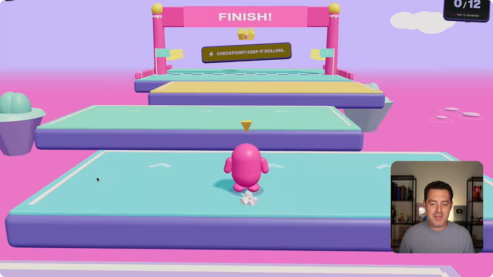
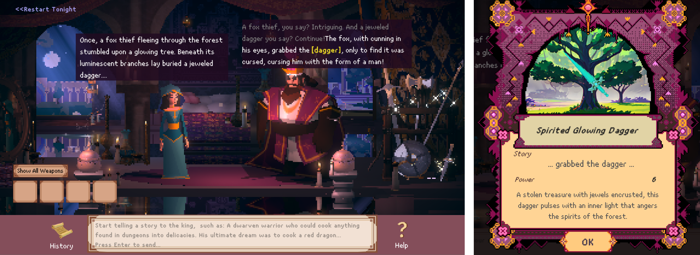
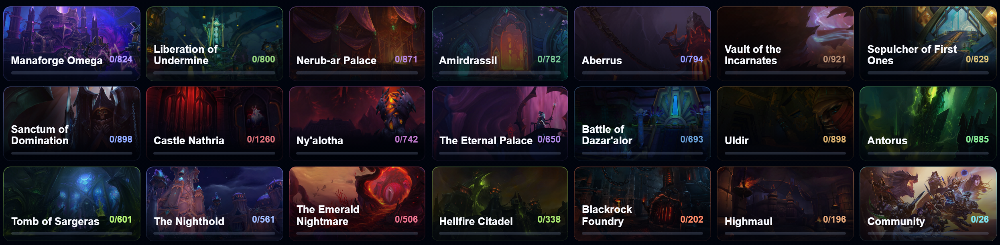

Arvio generatiivisen tekoälyn vaikutuksesta pelialaan
Kielteinen vaikutusMyönteinen vaikutus
Vuoden 2026 kysely muuttui. Vuosien luvut eivät ole suoraan vertailukelpoisia.
“Tässä oli meidän huoneemme näkemys. Entä ihmiset, jotka työskentelevät pelialalla?”
Näytä ensin, mitä kysyttiin: vaikutusta koko alaan. Vuoden 2026 vastaajista 52 % arvioi vaikutuksen kielteiseksi ja 7 % myönteiseksi. Aiemmissa kyselyissä kielteinen osuus oli pienempi.
Vuonna 2026 kohderyhmä ja kyselyn toteutus muuttuivat. Älä kuvaa lukuja samojen ihmisten mielipiteiden muutoksena tai tarkkana vuosittaisena trendinä. GDC itse varoittaa suorista vuosivertailuista. Myös muut vastausvaihtoehdot jätetään tästä kuvaajasta pois.
Siirtymä: “Mutta kielteinen suhtautuminen alan kehitykseen ei vielä kerro, käytetäänkö näitä työkaluja.”
Arvio generatiivisen tekoälyn vaikutuksesta pelialaan · GDC-kyselyt 2024–2026
* Vuoden 2026 kysely muuttui. Vuosien luvut eivät ole suoraan vertailukelpoisia.
“Vasemmalla ovat myönteiset arviot, keskellä sekä myönteisiä että kielteisiä vaikutuksia näkevät ja oikealla kielteiset arviot.”
Myönteisiä arvioita on kyselyissä 21 %, 13 % ja 7 %. Mixed impact -vastauksia on 57 %, 51 % ja 30 %. Kielteisiä on 18 %, 30 % ja 52 %. Vuoden 2024 suurin ryhmä näki sekä myönteisiä että kielteisiä vaikutuksia; vuoden 2026 vastaajista yli puolet arvioi vaikutuksen kielteiseksi.
Ryhmillä on sama nollasta alkava 0–100 prosentin asteikko. Jokaisen ryhmän vuoden 2026 pylväs on merkitty taustalla ja tähdellä, koska kohderyhmä ja kyselyn toteutus muuttuivat. GDC varoittaa suorista vuosivertailuista. Älä esitä lukuja samojen ihmisten mielipiteiden muutoksena tai tarkkana vuosittaisena trendinä.
Kysymys koskee vaikutusta koko pelialaan, ei vastaajan omaa työkalujen käyttöä. Mixed impact on oma vastausluokkansa; se ei tarkoita samaa kuin “ei vaikutusta” tai “en tiedä”. Muut vastaukset on merkitty alaviitteeseen erotuksena sadasta prosentista: 4 %, 6 % ja 11 %. Nämä ovat laskettuja jäännösosuuksia pyöristetyistä luvuista. Vuonna 2024 ne jakautuivat 1 %:iin “ei vaikutusta” ja 3 %:iin “en tiedä”.
Siirtymä: “Mutta kielteinen suhtautuminen alan kehitykseen ei vielä kerro, käytetäänkö näitä työkaluja.”
Mihin GenAI:ta käytetään? · Osuus työkaluja käyttävistä vastaajista · GDC 2026
“Työkalun käyttäminen ja sen vaikutusten hyväksyminen ovat kaksi eri kysymystä.”
36 % kaikista GDC-vastaajista kertoo käyttävänsä GenAI:ta työssään. Kuvaajan kaikki 11 käyttötapaa koskevat vain näitä käyttäjiä. Esimerkiksi 81 % ei ole osuus koko pelialasta. Vastaaja sai valita useita käyttötapoja, joten pylväät eivät summaudu sataan.
Tutkimus ja ideointi on yleisin käyttötapa. Päivittäisiin tehtäviin sisältyvät sähköpostit ja aikataulutus. Pelimateriaalin generointi tarkoittaa lähteen asset generation -luokkaa. Pelaajalle näkyvät ominaisuudet on erillinen kyselyn luokka: myös muissa luokissa tuotettu sisältö voi päätyä pelaajan nähtäväksi.
Oikealla säilyvät työpaikkaryhmien käyttöasteet. 58 % on julkaisu-, tukipalvelu- ja markkinointi/PR-organisaatioiden yhteinen ryhmä. Edellisen dian perusteella ei voi päätellä, miten juuri käyttäjät arvioivat AI:n vaikutuksia.
Siirtymä: “Entä ne ihmiset, joiden pitäisi lopulta haluta pelata näitä pelejä?”
Lähde ja rajaus
GDC 2026, sivut 19–20. Koko kyselyssä oli yli 2 300 vastaajaa; käyttötapakysymykseen vastasivat GenAI-käyttäjät. Mukana myös personoitu sisältö ja muu käyttö.
Pelaajat · Quantic Foundry
Tässä pelaajajoukossa: vahva ei.
Suhtautuminen GenAI:n käyttöön peleissä · loka–joulukuu 2025
85 %
suhtautui kielteisesti
Kielteiset
62,7 % erittäin kielteinen
15,9 % melko kielteinen
6,8 % hieman kielteinen
Neutraalit
6,0 % neutraali
Myönteiset
3,0 % hieman myönteinen
2,8 % melko myönteinen
1,8 % erittäin myönteinen
“Tässä pelaajajoukossa suhtautuminen oli vahvasti kielteistä. Moni valitsi kaikkein kielteisimmän vaihtoehdon.”
Quantic Foundryn vapaaehtoiseen lisäkyselyyn vastasi 1 799 ihmistä. Aktiiviset PC- ja konsolipelaajat painottuvat. Kerro otoksen rajaus ääneen ennen kuin annat yleisön tulkita 85 prosenttia kaikkien pelaajien mielipiteeksi.
Siirtymä: “Mutta mitä vastaaja ajattelee, kun kysymyksessä lukee vain ‘AI peleissä’?”
Lähde ja laskenta
Quantic Foundry, 18.12.2025. Alkuperäisen kaavion osuudet: erittäin kielteinen 62,7 %, melko kielteinen 15,9 %, hieman kielteinen 6,8 %, neutraali 6,0 %, hieman myönteinen 3,0 %, melko myönteinen 2,8 %, erittäin myönteinen 1,8 % ja ei tiedä tarpeeksi vastatakseen 0,9 %. Kielteiset yhteensä 85,4 % (nostoluvussa pyöristetty 85 %), myönteiset 7,6 %. Julkaistut osuudet summautuvat pyöristyksen vuoksi 99,9 prosenttiin. Kaaviosta ja selitteestä on jätetty pois 0,9 % ei osaa sanoa -vastauksia. Muut osuudet säilyvät alkuperäisinä; niitä ei ole skaalattu uudelleen.
Pelaajat · Quantic Foundry
Mitä pelaajat vastustavat eniten?
Kielteinen suhtautuminen GenAI:n eri käyttötapoihin
Kuvamateriaali herättää enemmän vastustusta kuin vaikeustason säätö.
“Edellä nähtiin vahva ei. Mutta vastustavatko pelaajat kaikkia käyttötapoja yhtä paljon? AI:n tekemä kuva, musiikki tai dialogi saa tässä porukassa aika suoran ein. Vaikeustason säätämiseen suhtaudutaan vähemmän kielteisesti. Käyttötavalla siis on väliä.”
Kielteisyys vaihtelee saman kyselyn sisällä käyttötavan mukaan. Vaikeustason kohdalla pienempi kielteinen osuus ei tarkoita, että enemmistö olisi innostunut. Kysymykset koskivat nimenomaan generatiivista tekoälyä, vaikka vaikeustason säätämiseen on muitakin menetelmiä.
Siirtymä: “Nämä olivat tiettyjä vastaajajoukkoja. Näyttääkö keskustelu samalta eri puolilla maailmaa?”
Lähde ja laskenta
Quantic Foundryn alkuperäinen käyttötapakuvaaja. Erittäin kielteinen + jokseenkin kielteinen: kuvamateriaali 83 + 8 ≈ 91 %, musiikki / äänitehosteet 77 + 11 ≈ 88 %, tarinankerronta / dialogi 70 + 13 = 83 %, tehtävät 59 + 18 = 77 %, vaikeustaso 27 + 16 ≈ 43 %. Artikkeli ilmoittaa myös dialogin 83 % ja tehtävien 77 % suoraan.
Korjaus aiempaan versioon: vaikeustason 50 % sisälsi virheellisesti myös “en tiedä tarpeeksi vastatakseni” -vastaukset ja pyöristyseroja. Tässä käytetään suoraan alkuperäisen kuvaajan kielteisiä osuuksia. “En tiedä” ei ole kielteinen vastaus.
Maavertailu · AI yleisesti
Sama AI, eri odotukset.
“AI:ta hyödyntävistä tuotteista ja palveluista on enemmän hyötyä kuin haittaa.” Samaa mieltä olevien osuus
← Enemmän samaa mieltäVähemmän samaa mieltä →
“Oma uutisvirta antaa helposti vaikutelman, että juuri sen keskustelu on koko maailman keskustelu.”
Nosta esiin Kiina, Japani ja Yhdysvallat. Japanin 50 % muistuttaa myös Aasian sisäisistä eroista. Maiden yhdistäminen kahdeksi yksimieliseksi leiriksi hävittäisi olennaista vaihtelua.
Näytetyt 27 maata on järjestetty samaa mieltä olevien osuuden mukaan. Etelä-Afrikka, Australia, Uusi-Seelanti, Turkki ja Israel on jätetty pois molemmista maavertailuista. Myös esimerkiksi Peru ja Meksiko sijoittuvat korkealle. Suomi ei ollut mukana kyselyssä.
Pylväs mittaa samanmielisyyttä väitteen kanssa. Loppuosa ei ole kokonaan eri mieltä: mukana on myös epävarmoja vastauksia. Vaaka-akseli näyttää maiden järjestyksen, ei erillistä myönteinen–kielteinen-asteikkoa. Pystyakseli alkaa nollasta.
Kysymys on AI:sta yleisesti. Tästä ei voi suoraan päätellä kiinalaisten tai amerikkalaisten pelaajien suhtautumista GenAI:lla tehtyihin peleihin.
Siirtymä: “Mistä tällaiset erot sitten voivat johtua?”
Lähde ja rajaus
Ipsos AI Monitor 2026, s. 13 ja 48. Verkkokysely 20.3.–3.4.2026. Maaotokset noin 500–1 000 vastaajaa. n = 23 532 tarkoittaa koko 32 maan kyselyä, ei esityksen 27 maan rajausta. Osassa maista vastaajat ovat väestöä kaupunkilaisempia, koulutetumpia ja/tai varakkaampia. Raportin 32 maan keskiarvoa ei ole lisätty maapylvääksi.
Maavertailu · AI yleisesti · alueet väreinä
Sama AI, eri odotukset.
“AI:ta hyödyntävistä tuotteista ja palveluista on enemmän hyötyä kuin haittaa.” Samaa mieltä olevien osuus
“Lisätään alueiden värit ja keskitytään näihin neljään ryhmään. Maiden luvut ja keskinäinen järjestys pysyvät samoina.”
Aasian maita on paljon kärjessä, mutta myös Latinalaisessa Amerikassa odotukset ovat korkealla. Japani näyttää samalla, ettei Aasia ole yksi yhtenäinen joukko.
Värit ovat tätä esitystä varten tehty aluejako, eivät kyselyn vastausluokkia tai aluekeskiarvoja. Meksiko kuuluu Latinalaiseen Amerikkaan; USA ja Kanada ovat oma ryhmänsä. Tältä dialta on jätetty pois Etelä-Afrikka, Australia, Uusi-Seelanti, Turkki ja Israel. Näytetään 27 tutkimuksen 32 maasta.
Pylväs mittaa samaa mieltä olevien osuutta. Muu osuus ei ole kokonaan kielteinen, vaan sisältää myös epävarmoja vastauksia. Kysely koskee AI:ta yleisesti, ei vain pelejä. Suomi ei ollut mukana.
Siirtymä: “Mistä tällaiset erot sitten voivat johtua?”
Lähde ja rajaus
Ipsos AI Monitor 2026, s. 13 ja 48. Sama aineisto kuin edellisellä dialla: verkkokysely 20.3.–3.4.2026. n = 23 532 on koko 32 maan kyselyn vastaajamäärä, ei tämän 27 maan rajauksen vastaajamäärä. Osassa maista vastaajat ovat väestöä kaupunkilaisempia, koulutetumpia ja/tai varakkaampia.
Maavertailu · keskustelu
Miksi suhtautuminen eroaa?
Sama teknologia. Eri odotukset siitä, kenen elämä paranee.
Odotettu hyöty
Kiinassa AI:lta odotetaan vaurastumista. USA:ssa alan johtajat varoittavat myös työn katoamisesta. Uusi mahdollisuus vai uhka omalle asemalle?
Odottaa AI:n parantavan maan taloutta:
Kiina 77 % · USA 24 %
Ipsos 2026 · seuraavat 3–5 vuotta
Luottamus
Kiinassa hallintoon ja teknologiayhtiöihin luotetaan AI:n käyttäjinä paljon USA:ta enemmän. Uskotaanko hyödyn jakautuvan myös itselle?
Luottamus siihen, että AI:ta käytetään yleiseksi hyväksi:
Kiinassa selvästi vahvempi
University of Melbourne / KPMG 2025
Oma kokemus
Kiinassa AI on jo useamman käytössä. Oma hyöty voi ruokkia luottamusta. Huono ensikokeilu taas voi jättää aivan toisen kuvan.
Käyttää AI:ta vähintään muutaman kuukauden välein:
Kiina 89 % · USA 53 %
University of Melbourne / KPMG 2025
Pelottaako enemmän jäädä AI-junasta vai menettää oma paikkansa?
Avaus: “Mun mielestä tässä kiinnostavaa on se, mitä ihmiset uskovat AI:n tekevän juuri heidän tulevaisuudelleen. Toiselle se on mahdollisuus vaurastua. Toiselle se kuulostaa siltä, että joku aikoo säästää hänen palkkansa.”
Odotettu hyöty: mukaan seuraavaan nousuun
“Jos näet AI:n seuraavana isona kasvun mahdollisuutena, et halua jäädä siitä pois. Jos taas kuulet jatkuvasti, että sillä korvataan ihmisiä, ei ole ihme, jos se ei innosta.” Tämä on keskustelun tulkintakehys, ei kyselystä todistettu syy.
Konkreettiset puhe-esimerkit: Kiinan valtioneuvoston AI Plus -linjaus (8/2025) liittää AI:n talouskasvuun, teollisuuteen ja elämänlaatuun. Dario Amodei puolestaan arvioi tammikuun 2026 esseessään AI:n voivan syrjäyttää puolet uran alkuvaiheen toimistotyöpaikoista 1–5 vuodessa. Se on hänen ennusteensa, ei toteutunut työpaikkakato. Hän käsittelee myös kasvun mahdollisuuksia. Esimerkit havainnollistavat erilaisia viestejä; ne eivät mittaa koko idän ja lännen keskustelua.
“Sama teknologia voidaan siis esitellä meille aika eri tarinana.” Pelottelu on arvio viestinnän tavasta, ei kaikkien työpaikkahuolien selitys. AI:n taloushyötyihin uskominen ja oman työn puolesta huolehtiminen voivat esiintyä yhtä aikaa.
Luottamus: uskotaanko muutoksen ohjaajiin?
“Jos uskot, että päättäjät ja yritykset pystyvät tekemään tästä meille hyvän asian, lähtökohta on toinen kuin jos odotat niiden keräävän hyödyt ja jättävän haitat muille.” Kyselyssä kiinalaisvastaajien luottamus sekä hallintoon että suuriin teknologiayhtiöihin AI:n kehittäjinä ja käyttäjinä oli selvästi yhdysvaltalaisvastaajia suurempaa.
Kiinan taloudellista nousua voi pohtia yhtenä luottamuksen historiallisena taustana. Kysely ei kuitenkaan osoita, että juuri se aiheutti luottamuksen tai että vastaajat antaisivat noususta kaiken kunnian nykyhallinnolle. Luottamus toimijoihin ei myöskään todista niiden toimivan vastuullisesti. Väite aiempien talousjunien missaamisesta vaatisi tarkemman ajanjakson ja perustelun.
Oma kokemus: hyöty muuttuu omakohtaiseksi
“Jos AI auttaa mua jo tekemään jotain, mitä en ennen osannut tai ehtinyt, hyöty ei ole enää pelkkä lupaus. Jos mun ainoa kokeilu oli huono, mieleen voi jäädä, että tämähän on ihan turha.” Kyse on mahdollisesta mekanismista: käyttö voi muuttaa asenteita, ja myönteinen asenne voi lisätä käyttöä.
Käyttöluku sisältää tietoisen käytön vapaa-ajalla, työssä tai opiskelussa vähintään muutaman kuukauden välein. Se ei tarkoita päivittäistä käyttöä eikä vain generatiivista AI:ta. Samassa tutkimuksessa Japanin luku oli 50 % ja Norjan 71 %: maanosaraja ei selitä kaikkea.
Huonon ilmaismallikokeilun vaikutusta voi käsitellä omana havaintona, jos sellaisia kokemuksia on. Nämä lähteet eivät osoita, että lännen skeptisyys johtuisi heikommista malleista tai että parhaat mallit poistaisivat vastustuksen. Myös kokenut käyttäjä voi suhtautua AI:hin kriittisesti.
Yleisölle: “Kumpi teitä mietityttää enemmän: että jäätte tästä muutoksesta ulos, vai se, mitä muutos vie mennessään?”
Siirtymä: “Kaiken tämän keskellä pelialustan pitää kuitenkin päättää, millä ehdoilla pelejä julkaistaan.”
Lähteet ja lukujen rajaukset
Ipsos AI Monitor 2026, s. 2–4 ja 27: AI:n lisääntyvän käytön odotetaan parantavan maan taloutta seuraavien 3–5 vuoden aikana, Kiina 77 %, USA 24 %. Verkkokysely 20.3.–3.4.2026. Kiinan otos painottuu koko väestöä kaupunkilaisempiin, koulutetumpiin ja varakkaampiin vastaajiin.
AI-sisältö johti hylkäyksiin, kun sen oikeuksia ei voitu varmistaa.
2024
Kerro, miten käytät AI:ta.
AI-sisällölle ilmoitusmenettely. Pelatessa syntyvälle sisällölle myös suojaukset.
Nyt
Mitä päätyy pelaajalle?
Nykyohje keskittyy pelin sisältöön. Työkalujen yleiset tehokkuushyödyt erotetaan siitä.
Pelkkä kyllä tai ei ei riitä. Raja pitää myös pystyä valvomaan.
Vuonna 2023 kyse oli oikeuksiin ja koulutusaineistoihin liittyvästä epävarmuudesta ja julkaisuhylkäyksistä. Älä sano, että Steam julisti pysyvän kaikkia AI-pelejä koskevan kiellon.
Vuonna 2024 Valve avasi reitin useimmille AI:ta käyttäville peleille: kehittäjä ilmoittaa sisällöstä ja erottaa etukäteen tuotetun sekä pelin aikana syntyvän sisällön. Jälkimmäiseen vaaditaan myös suojauksia laitonta sisältöä vastaan.
Nykyohje painottaa pelaajan kohtaamaa sisältöä, kuten kuvia, ääntä ja tekstiä. Ilmoittaminen ei poista vastuuta sisällöstä. “Nyt” kuvaa tarkistettua nykytilaa, ei täsmällistä muutosajankohtaa.
Oma tulkinta: “Minusta tämä kertoo siitä, että me vielä haemme suhtautumistamme AI:hin. Se on jo osa työkalupakkia. Kaikkea käyttöä ei näe valmiista pelistä, eikä jokaista työvaihetta voi käytännössä valvoa. Siksi pitää päättää, mihin raja vedetään ja mitä oikeasti tarkastetaan.” Tämä on puhujan tulkinta valvonnan vaikeudesta, ei Valven lausunto siitä, että valvonta olisi mahdotonta tai tarpeetonta.
Vuoden 2023 hylkäykset osoittavat varovaisuutta oikeusepävarmuuden edessä. Ne eivät todista, että Valve olisi yrittänyt poistaa kaiken AI:n ja sitten luopunut yrityksestä. Nykyinen ilmoitusmenettely on yhä sääntelyä ja valvontaa, ei niistä luopumista.
Siirtymä: “Mutta vaikka peli täyttäisi alustan säännöt, pelaaja voi vetää oman rajansa ihan eri kohtaan.”
Assassin’s Creedin luojiin kuuluvan Désilets’n uusi peli.
Anna ensin pelille hetki tilaa. Kerro Désilets’n yhteys Assassin’s Creediin ja esittele yliluonnollinen Amsterdam. Kuvassa on Noa ja hänen taikuutensa.
Kerro oma aito ensivaikutelmasi pelistä. Älä väitä kaikkien ensin innostuneen siitä tai järjestä tässä uutta gallupia. Peliesittelyyn kuuluva “pelaisitko?” tulee seuraavassa osuudessa.
Siirtymä: “Ja tämä peli myös herätti kiinnostusta. Katsotaan kaksi konkreettista esimerkkiä.”
Kaksi toimittajaa kuvaa innostustaan ennen AI-kohua.
Jordan GerblickGamesRadar+
Traileri vei mukanaan.
Historiallinen kaupunki, musta magia ja synkkä tunnelma osuivat hänen makuunsa. Hän kertoo innostuneensa pelistä heti esittelyssä.
Ashley BardhanGamesRadar+
Uusi pelimaailma herätti odotuksia.
Désilets’n uusi peli tuntui poikkeuksellisen kiinnostavalta. Noa, noituus ja omaperäinen lähtökohta vetivät puoleensa.
Kiinnostus peliin oli olemassa jo ennen AI-keskustelua.
“Tämä ei siis ollut peli, joka ei kiinnostanut ketään. Näissä kommenteissa oli ihan aitoa innostusta: maailma, tunnelma ja tunnetun tekijän uusi peli kiinnostivat jo itsessään.”
Gerblick kuvaa jälkikäteen, kuinka Summer Game Festin paljastustraileri herätti hänessä innostusta. Bardhan muistelee niin ikään vahvaa kiinnostustaan ennen kuin kuuli AI:n käytöstä. Dian tekstit ovat suomenkielisiä tiivistelmiä, eivät suoria sitaatteja tai ennen kohua julkaistuja arvioita.
Pidä tämä dia innostuksessa. Nosta Ashley Bardhan nimeltä esiin: hänen myöhempään ristiriitaiseen suhtautumiseensa palataan vastauksen yhteydessä. Näin yleisö voi seurata saman ihmisen kokemusta.
Siirtymä: “Sitten keskusteluun tuli tieto tekoälyn käytöstä. Katsotaan, mitä silloin tapahtui.”
Kaksi toimittajaa ei osoita koko yleisön suhtautumista. Lähteet tukevat esimerkkejä kiinnostuksesta ja sen muutoksesta, eivät väitettä, että kaikki kielteisyys johtuisi yksin AI:sta.
Kesäkuu 2026 · prologidemo toi AI:n käytön näkyviin
GamesRadar+ · ote uutisotsikosta
“Assassin's Creed creator's new game is the latest to feature AI-generated assets its devs forgot to take out”
AI-sisältöä päätyi demoon.
Studio vahvisti AI:lla tehtyjä kuvia pelin muotokuvissa ja markkinointimateriaalissa.
Tekotapa nousi arvioitavaksi.
AI-epäilyt herättivät kritiikkiä. Pelin kiinnostavuuden rinnalle nousi kysymys siitä, miten se oli tehty.
“Tässä oli kiinnostava peli ja tunnettu tekijä. Sitten prologidemosta alettiin epäillä AI:lla tehtyä sisältöä. Studio tarkisti asian ja vahvisti, että mukana oli tällaisia kuvia. Keskusteluun tuli pelin lisäksi sen tekemisen tapa.”
Panachen 9.6.2026 julkaisemaa lausuntoa lainaavan GamesRadar+-raportin mukaan varhaisia AI:lla tuotettuja versioita oli päätynyt prologiin, muun muassa pelin muotokuviin, sekä ulkoiseen markkinointimateriaaliin. Studio kuvasi tätä vahingoksi. Älä esitä tahallista salaamista todistettuna.
Englanninkielinen ote on uutisotsikon alku, ei tekijän suora sitaatti. Selitä sen sisältö suomeksi: Assassin’s Creedin tekijän uudessa pelissä oli AI-materiaalia, joka tekijöiden mukaan oli jäänyt poistamatta. Lähde kuvaa kritiikkiä, mutta ei mittaa sen yleisyyttä.
Älä kuvaa tilannetta pelkkänä sisäisen ideointityökalun käyttönä: tässä tapauksessa sisältöä oli päätynyt myös demoon. Säästä poistamisesta ja tulevasta käytöstä annettu lupaus seuraavalle dialle.
Siirtymä: “Miten tekijät vastasivat tähän — ja riittikö vastaus poistamaan epäluulon?”
AI:n käyttö herätti vastustusta. Tekijä vastasi — mutta vakuuttiko se?
Mitä tekijä kertoi?
Patrice Désilets’n mukaan AI:ta oli käytetty lähinnä konsepti- ja esituotantovaiheessa.
Hän kertoi AI-sisällön olevan poistettu ja lupasi, ettei AI:ta enää käytetä.
Sama toimittaja, uusi ristiriita
“for me, 1666: Amsterdam will always have the stain of AI on it”
Ashley Bardhan · GamesRadar+
Silti hän halusi pelata — ja palautti pelin toivelistalleen.
Jos AI-sisältö poistetaan, muuttaako se sinun suhtautumistasi?
Désilets kertoi GamesRadarille, että AI:ta oli käytetty erityisesti konsepti- ja esituotantovaiheessa, että AI-sisältö oli poistettu ja ettei käyttöä jatkettaisi. Tämä on tekijän lausunto.
Tapauksesta on raportoitu vastareaktio ja sitä seurannut vastaus. Meillä ei ole edustavaa ennen–jälkeen-mittausta yleisön mielipiteestä tai näyttöä AI-kohun vaikutuksesta myyntiin.
Palauta mieleen odotusdian Ashley Bardhan: häntä kiinnosti juuri tämä peli. Bardhan kuvaa artikkelissa ristiriitaista suhtautumistaan: AI:n käyttö häiritsi häntä edelleen, mutta peli kiinnosti ja hän palautti sen toivelistalleen. Selitä englanninkielisen sitaatin ajatus suomeksi: AI:n leima jäi hänen mielessään peliin. Älä yleistä tätä kaikkien pelaajien mielipiteeksi tai esitä sitaattia toimituksen yhteisenä kantana.
Kysy dian kysymys avoimesti. Anna tilaa sekä niille, joille valmistustavalla on suuri merkitys, että niille, jotka painottavat omaa pelikokemusta. Muutama vastaus riittää.
Siirtymä peliesimerkkeihin: “Nyt on katsottu tutkimuksia, sääntöjä ja reaktioita. Katsotaan seuraavaksi muutama peli. Pelaisitko sinä näitä?”
“Nyt on kuultu, mitä muut ajattelevat. Katsotaan seuraavaksi, mitä te ajattelette näistä.”
Valmistelu: tämä on käyttäjän pyytämä yksi yhteinen paikkamerkki myöhemmin valittaville peliesimerkeille. Avaa valitut videot tai pelit tästä. Ei vielä valittua pelilistaa tai upotettuja demoja.
Pidä kierros nopeana. Kerro kunkin esimerkin kohdalla lyhyesti, mitä pyydettiin ja paljonko tulosta muokattiin. Erota yhden aloituspyynnön tulos, jatkokehitetty peli ja pelkkä grafiikkademo. Pyydä vain osasta esimerkkejä nopea käsimerkki.
Älä kutsu tätä alkuperäiseen gallupiin verrattavaksi tutkimukseksi. Seuraavaksi kiristetään kysymystä kokeilemisesta kiinnostukseen.
Ensivaikutuksen jälkeen
Mihin näistä palaisit huomenna?
Kokeilemisen halu syntyy nopeasti. Syy pelata lisää voi olla aivan toinen.
Ensimmäinen vaikutelma
Ulkonäkö, tunnelma tai tekninen yllätys.
Miten tämä on oikein tehty?
Syy pelata
Kiinnostava valinta, hyvä tuntuma, huumori tai uteliaisuus.
Vielä yksi yritys.
Mikä jäi mieleen itse pelaamisesta?
“Kokeileminen ja se, että haluaa pelata lisää, ovat aika eri asioita.”
Kuuntele pari perustelua. Myös kertaluonteinen hauska kokemus on arvokas: peli voi täyttää tarkoituksensa yhdessä illassa. Huominen on kysymys kiinnostuksesta, ei vaatimus kaikkien pelien jatkuvasta pelaamisesta.
Poimi yleisön oma sana myöhempää varten: liike, tunnelma, idea, tylsyys. Siirtymä: “Entä millä nimellä tällaista tekemistä kutsutaan?”
Yksi esimerkki tarkempaan katseluun
Hetkinen. Tämähän näyttää tutulta.

Cloud Top Chaos · AI:lla tehty Fall Guys -henkinen demo
Värikäs esterata. Hahmot säntäilevät. Yritä pysyä mukana.
Tuttu idea on helppo tunnistaa.
Onko ensimmäinen ajatuksesi “hauska” vai “taas kopio”?
“Tässä on Cloud Top Chaos. Minulle tästä tulee heti mieleen Fall Guys. Tuleeko teille?”
Älä julista demoa objektiivisesti slopiksi. Kysy, mistä mahdollinen leima syntyy. Berman kutsuu lähtöä yhden promptin tulokseksi mutta täsmentää näytetyn version saaneen Brianin palautteesta jatkopromptin: kamera, kallistuvat tasot ja reunojen törmäykset.
“Mutta entä tämä toinen tapa tehdä vähän samaa?”
Sitten pieni aikahyppy
Stumble Guys ehti ensin. Vuonna 2020.
Suomalainen Kitka Games toi Fall Guys -henkisen esterataidean puhelimiin.
2020
Tuttu idea. Toinen laite. Oma yleisö.
Ensimmäinen versio syntyi tekijän mukaan noin kolmessa viikossa.
Tämä tapahtui ennen ChatGPT:n ja nykyisen GenAI-aallon läpimurtoa.
Jos näkisit tämän ensi kertaa nyt, epäilisitkö AI-kopioksi?
“Tämä on minusta kiinnostava kohta. Samannäköisen pelin voisi tänään kuitata AI-kopioksi. Stumble Guysin historia alkaa kuitenkin vuodesta 2020.”
Nguyen kuvaa haastattelussa Fall Guysista inspiroitunutta mobiilipeliä, noin kolmen viikon ensimmäistä versiota ja vuoden 2020 testijulkaisua. Käytä vuosilukua: tarkasta ensimmäisestä julkaisupäivästä lähteet eroavat. Älä väitä, että mikään pelin myöhempi versio ei voisi käyttää AI:ta tai että peli olisi asset flip. Mobiili oli alkuperäinen mahdollisuus, ei kuvaus kaikista nykyisistä alustoista.
“Kopioimisen ilmiö oli siis jo täällä. Mitä uusi leima meille kertoo?”
Mitä oikeastaan arvioimme?
Kopio, huono peli vai AI:lla tehty?
Omaperäisyys
Lainaako peli tutun kaavan? Tuoko se siihen uuden yleisön, tilanteen tai oman käänteen?
Laatu
Toimiiko peli? Onko sitä hauska pelata? Onko kokonaisuus viimeistelty?
Tekotapa
Mitä työkaluja käytettiin? Mitä tiedämme tekijyydestä ja aineiston alkuperästä?
Samankaltaisuus näkyy ruudulla. Työkaluhistoria ei välttämättä näy.
Oma kysymykseni: mitä pelaaja saa tästä versiosta?
“Voin pitää peliä epäomaperäisenä mutta silti hauskana. Tai omaperäisenä mutta huonona. Ja voin vastustaa sen tekotapaa kummassakin tapauksessa.”
Älä rinnasta mobiilipelin vuosien kehitystä ja lyhyttä AI-demoa laadultaan tai työmäärältään. Vertauksen tarkoitus on erottaa tuttu ulkonäkö, laatu ja tuotantotapa. Seuraava dia antaa AI-slop-sanalle saman erottelun.
Sanotaan se ääneen
Mitä me tarkoitamme AI-slopilla?
Samalla sanalla voidaan kritisoida kolmea eri asiaa.
Heikko kokonaisuus
Sisältöä on paljon, mutta osat eivät sovi yhteen. Pelaaminen ei lunasta lupausta.
Sisällön tulva
Samankaltaisia tuotoksia tulee vastaan niin paljon, että kiinnostavan löytäminen vaikeutuu.
AI:n käyttö itsessään
Huoli tekijyydestä, aineistosta tai työstä voi jäädä, vaikka lopputulos näyttäisi hyvältä.
Mikä näistä häiritsi juuri nähdyissä esimerkeissä?
“Jos vastaat kyllä, mikä siinä ratkaisee? Se, miltä peli näyttää? Että siinä ei ole tekemistä? Vai se, että tiedät sen olevan AI:lla tehty?”
Älä nimeä kaikkia juuri nähtyjä pelejä slopiksi. Anna yleisön sanoittaa, tarkoittaako se heikkoa laatua, määrää, tekijyyttä vai toimintatapaa. Seuraava vertaus koskee erityisesti huolimattomasti koottua sisältöä.
Tuttu kysymys, uusi työkalu
Ollaanko tässä oltu ennenkin?
Tekemisen helpottuminen on tuonut sekä uusia tekijöitä että hätäisesti koottuja pelejä.
Asset flip
AI slop
Palikat
Valmiit assetit ja pelipohjat
Generoitu koodi, kuvat, teksti ja ääni
Kritiikin ydin
Vähän omaa työtä valmiin pohjan päälle
Paljon tuotosta, vähän valintaa ja viimeistelyä
Pelaajan kysymys
Missä on oma idea ja syy pelata?
Missä on oma idea ja syy pelata?
Mitä tekijä lisäsi palikoiden väliin?
“Ennen puhuttiin asset flipeistä. Nyt puhutaan AI slopista. Minusta tuttu osa on se, että tavaraa syntyy, mutta joku syy pelata sitä voi puuttua.”
Tämä on puhujan rinnastus kahdesta kielteisestä leimasta, ei väite että ilmiöt olisivat samoja tai kaikki aiempi slop olisi korvautunut AI:lla. Asset flip viittaa tässä vähäisellä omalla työllä koottuun tuotteeseen, ei kaikkeen ostettujen assettien käyttöön.
Älä käytä jonkin yksittäisen kehittäjän peliä huonona esimerkkinä ilman perustelua. Seuraavaksi käännä rinnastus myös myönteiseksi.
Raja ei ole aivan näin helppo
Hollow Knightkin käytti valmiita työkaluja.
Team Cherry yhdisti oman käsin piirretyn ilmeensä valmiisiin teknisiin työkaluihin.
Valmista tekniikkaa
2D Toolkit auttoi työskentelyssä Unityn kanssa. Vihollisia ja vuorovaikutteisia kohteita rakennettiin PlayMakerilla.
Omaa tekemistä
Taide ja animaatio piirrettiin Photoshopissa. Mukana oli myös omaa koodia — ja päätökset siitä, millainen peli kokonaisuudesta syntyy.
Valmis työkalu ei määritä lopputuloksen omaperäisyyttä.
“Tässä on konkreettinen vastaesimerkki. Valmiiden työkalujen käyttäminen ja omaperäisen pelin tekeminen sopivat samaan projektiin.”
Unityn tapaustutkimus kuvaa 2D Toolkitin ja PlayMakerin käyttöä sekä käsin piirrettyä taidetta. Tämä ei ole väite ostetusta pelitaiteesta tai AI:n käytöstä Hollow Knightissa.
“Tekemisen kynnystä madallettiin siis jo ennen nykyistä AI-aaltoa.”
Asset-kaupat
Kaikkea ei tarvinnut tehdä itse ennenkään.
Asset-kaupoista saa sekä sisältöä että teknisiä lähtökohtia.
Valmis palikka
Mihin se voi vapauttaa aikaa?
Hahmot ja ympäristöt
Peli-idean kokeiluun ennen oman lopullisen ilmeen rakentamista.
Äänet, musiikki ja käyttöliittymät
Palautteen ja tunnelman testaamiseen jo varhaisessa versiossa.
Pelipohjat ja työkalut
Omien sääntöjen rakentamiseen valmiin teknisen pohjan päälle.
Valinta, muokkaus ja yhteensovittaminen ovat edelleen työtä.
“Minun ei tarvitse ensin oppia mallintamaan jokaista puuta, jotta voin kokeilla omaa peli-ideaa.”
Valmiiden assettien arvo on työnjaossa ja mahdollisuudessa keskittyä olennaiseen. Niiden valinta, muokkaus ja yhteensovittaminen ovat silti tekemistä. Ostetun assetin käyttöehdot pitää tuntea.
Siirtymä: “Eikä kyse ollut vain kuvista ja malleista.”
Visuaalinen ohjelmointi
Kaikkea koodiakaan ei tarvinnut kirjoittaa.
Esimerkiksi Unreal Enginen Blueprintsillä pelilogiikkaa rakennetaan yhdistämällä solmuja.
Painallus→Onko hahmo maassa?→Hyppy + ääni
Tekemiseen uusi reitti
Suunnittelija voi rakentaa vuorovaikutusta kirjoittamatta jokaista toimintoa tekstikoodina.
Logiikka pitää silti ratkaista
Milloin toiminto sallitaan? Mitä tapahtuu seuraavaksi? Miten se vaikuttaa pelin tilaan?
AI tuo rinnalle pyynnön tavallisella kielellä.
“Blueprintseissä logiikkaa voi yhdistellä visuaalisesti. Ohjelmointia sekin on, vaikka kaikkea ei kirjoiteta tekstinä.”
Kaavio on ajatuksen havainnollistus, ei kuvakaappaus toimivasta Blueprintistä. Älä lupaa, ettei tarvitsisi ymmärtää ehtoja, tapahtumia tai pelin sääntöjä.
“AI tuo tähän vielä yhden tavan: voin kuvata tavallisella kielellä, mitä haluan tapahtuvan.”
Sama suunta jatkuu
Kynnys on laskenut jo pitkään.
Uudet tavat eivät poista vanhoja. Samassa pelissä voidaan käyttää kaikkia näitä.
Työkalu
Mitä saa lähtökohdaksi?
Mitä tekijä ratkaisee?
Valmiit assetit
Sisältöä ja teknisiä palikoita
Mikä sopii juuri tähän peliin?
Visuaalinen ohjelmointi
Tavan rakentaa logiikkaa solmuista
Mitä tapahtuu, milloin ja miksi?
Generatiivinen AI
Luonnoksia ja toteutusehdotuksia
Mitä pyydän, hyväksyn, muutan ja testaan?
Yhä useampi voi päästä ideasta kokeiltavaan versioon.
“AI ei aloittanut tätä kehitystä. Se jatkaa sitä ja voi auttaa entistä useammassa työvaiheessa.”
Nämä tavat ovat rinnakkaisia ja yhdisteltäviä, eivät toisiaan korvaavia aikakausia. Kynnys ei ole sama kaikille: osaaminen, laitteet, aika ja raha vaikuttavat edelleen.
Siirtymä: “Silti kaikki kysymykset eivät ole tuttuja.”
Vertauksellakin on rajansa
Tuttu ilmiö. Uusia kysymyksiä.
“Huonoja pelejä oli ennenkin” ei vielä vastaa kaikkeen.
Löydettävyys
Jos julkaiseminen helpottuu, miten pelaaja löytää itselleen kiinnostavan pelin?
Alkuperä ja luottamus
Mihin aineistoon sisältö perustuu? Mitä sen tekemisestä kerrotaan pelaajalle?
Työ ja oppiminen
Kenen työ muuttuu? Mistä uusi tekijä saa kokemuksen, jolla arvioida tuotosta?
Laadun, tekotavan ja työelämän kysymykset kulkevat rinnakkain.
“Huonoja pelejä oli ennenkin ei vastaa kaikkeen. Mittakaava, aineiston alkuperä ja tekijöiden asema ovat myös oikeita kysymyksiä.”
Tässä ei esitetä lukua slopin määrästä tai väitetä kaikkien mallien aineistoja samanlaisiksi. Tämä on lyhyt rajaus vertaukselle, ei uusi väittelyosuus.
“Mutta palataan siihen, mitä minä voin tekijänä tehdä.”
Palataan hetkeksi peliyhtiöihin
Mitä “ei AI:ta” oikeastaan lupaa?
Pelaajalle lause voi kuulostaa yksiselitteiseltä. Tuotannossa sillä voi olla monta eri rajaa.
Valmis peli
Ei generoituja kuvia, ääniä tai tekstejä pelaajan nähtäväksi.
Luova työ
Ei generointia myöskään luonnoksissa tai konseptivaiheessa.
Koko työprosessi
Ei AI-apua koodiin, tutkimukseen, testaukseen tai dokumentointiin.
Minkä näistä sinä kuulit, kun joku sanoi “ei AI:ta”?
“Amsterdamissa jo konseptivaiheen käyttö riitti keskusteluun. Siksi minusta kannattaa pysähtyä siihen, mitä yhtiö oikeasti lupaa.”
Nämä ovat havainnollistavia tulkintoja. Älä esitä niitä kolmena tosiasiallisena yrityslupauksena. Seuraavaksi otetaan yksi nimetty, dokumentoitu esimerkki.
Konkreettinen esimerkki · Capcom
Molemmat voivat olla totta.
Resident Evilin ja Monster Hunterin julkaisija rajasi käyttötapaa sijoittajille helmikuussa 2026.
Ei generoituja assetteja peliin
Yhtiö kertoi, ettei se sisällytä AI:n generoimaa materiaalia pelisisältöön.
Kyllä työprosessin tehostamiselle
Samalla yhtiö kertoi aikovansa hyödyntää GenAI:ta kehitystyön tehokkuuden ja tuottavuuden parantamiseen.
Valmiin sisällön alkuperä ja sen tekemisessä käytetyt työkalut ovat eri kysymyksiä.
Tässä AI:n käyttö kerrottiin julkisesti.
“Tässä ei tarvitse arvailla salaista käyttöä. Capcom sanoo itse molemmat asiat.”
Suomenkielinen tiivistelmä sijoittajatilaisuuden lausunnosta, ei sanatarkka sitaatti. Tilaisuus oli 16.2.2026, yhteenveto uutisoitiin 23.3. Yhtiö puhui myös käyttötapojen arvioinnista: älä esitä kaikkia suunnitelmia jo toteutettuna työnkulkuna tai väitä tietyn pelin käyttäneen tiettyä työkalua.
“Miksi julkinen lupaus ja arjen työ näyttävät sitten niin erilaisilta?”
Virheen selvittäminen tai prototyypin rakentaminen voi olla hyödyllistä ilman AI:lla tuotettua lopullista kuvitusta.
Lupaus pelaajalle
Markkinoinnissa korostuvat lopputulos, tekijät ja luottamus. Tuotannon työkalu ei aina ole myyntivaltti.
Onko AI:sta tullut työkalu, jota kannattaa käyttää mutta ei korostaa?
“Tämä on se ristiriita, jota minä mietin. Arjessa työkalusta voi olla hyötyä, mutta AI-leima ei välttämättä auta myymään peliä.”
47 ja 19 prosenttia koskevat vain GenAI-käyttäjiä. Ne eivät ole toisiaan poissulkevia ryhmiä eivätkä paljasta yksittäisten studioiden käyttöä. Kysely ei mittaa salailua. Älä päättele, että AI:sta kieltäytyvät studiot valehtelisivat tai että kaikki länsimaiset pelaajat vastustaisivat AI:ta.
“Katsotaan nyt konkreettisesti, mitä nämä työkalut voivat tehdä pelin eri vaiheissa.”
Pelaajasta tekijäksi
Mitä minä sitten tuon tähän?
Palikoiden saatavuus tekee näistä päätöksistä entistä näkyvämpiä.
Tarkoitus
Kenelle teen tämän? Haluanko naurattaa, jännittää, yllättää vai kertoa jotain tuttua?
Valinnat
Mikä versio palvelee ideaa? Mitä jätän pois, vaikka sen saisi tehtyä?
Kokonaisuus
Miten liike, säännöt, kuva ja ääni tukevat samaa kokemusta?
Katsotaan, missä AI voi auttaa näiden päätösten toteuttamisessa.
“Tässä kohtaa tämä muuttuu minusta kiinnostavaksi. Mitä haluan saada pelaajassa aikaan, ja miten sen rakennan?”
Käytä omaa puhetapaa. Tästä alkaa kehitysosuus. Älä aloita osastoluettelolla; aloita pelaajan toiminnasta.
Pelisuunnittelu
Mitä tässä oikeasti tehdään?
Pelisuunnittelussa rakennetaan tavoitteita, valintoja ja seurauksia.
Yritän→Saan palautetta→Muutan toimintaani
AI ideointikumppanina
Pyydä vaihtoehtoisia sääntöjä, vastuksia tai kenttiä. Valitse kokeiluun yksi ajatus kerrallaan.
Pieni sääntö, iso vaikutus
Jos mukaan saa vain kolme esinettä, keräämisestä tulee valinta. Mitä jätän, mitä otan?
Yksi kiinnostava päätös voi kantaa pidemmälle kuin pitkä ominaisuuslista.
Viittaa yhteen juuri nähtyyn peliin. “Mikä tässä oli pelaajan päätös? Miksi yrittäisin uudestaan?”
AI:n kanssa voi keksiä sääntöjä, vastuksia ja vaihtoehtoja. Valitse kokeiltavaksi yksi pelillinen ajatus, älä mahdollisimman pitkää ominaisuuslistaa.
Siirtymä: “Kokeillaan, miten sama perusidea voisi muuttua.”
Suunnittelu on valintoja
Sama rata. Eri syy ottaa riski.
Pidetään ohjaus ja ympäristö samoina. Muutetaan vain palkinnon sääntöä.
A · Kerää rauhassa
Jokainen esine antaa yhden pisteen. Kerättyjä pisteitä ei voi menettää.
Testataan: onko liikkuminen ja löytäminen itsessään hauskaa?
B · Uskallatko jatkaa?
Arvokkaat esineet ovat vaarallisella reitillä. Osuma vie mukana olevat pisteet.
Testataan: syntyykö kiinnostava riski vai pelkkää turhautumista?
AI voi auttaa rakentamaan vaihtoehdot. Pelaaminen näyttää seurauksen.
“Kumpi olisi teistä kiinnostavampi? Ei ole yhtä oikeaa vastausta: nämä lupaavat eri kokemuksen.”
Kuvitteellinen esimerkki, ei mitattu vertailu tai aiemmin nähdyn pelin todellinen muutos. Pidä muu toteutus samana, jotta säännön vaikutusta voi arvioida.
“Sitten se päätös pitäisi saada tuntumaan myös käsissä.”
Ohjelmointi
“Voisiko hyppy tuntua paremmalta?”
AI voi kirjoittaa, selittää ja muuttaa koodia. Toive pitää silti tarkentaa.
Toive pelaajan kielellä
Vähemmän leijumista. Nopeampi pudotus. Hieman anteeksiantoa reunalta hypätessä.
Muutos toteutuksessa
Painovoima, lähtönopeus ja ajoitus muuttuvat. Samalla pitää tarkistaa, mille tasanteille pääsee.
Koodi tekee hypyn mahdolliseksi. Kokeilemalla löytyy tuntuma.
“Tällaisen pyynnön voi esittää tavallisella kielellä. Mutta mitä parempi tarkoittaa? Napakkaa? Leijuvaa? Helpompaa?”
Kaaret ovat tätä esitystä varten tehty kaavio. Ne eivät ole mitattuja hyppyratoja, mallien tuloksia tai aiemmin näytetyn pelin ennen–jälkeen-versioita.
Ohjelmoinnissa muutetaan esimerkiksi nopeutta, painovoimaa ja ohjauksen joustoa. AI voi auttaa toteutuksessa, mutta toive tarkentuu kokeilemalla. Kumpikaan kaari ei ole yleisesti parempi.
Seuraavaksi: “Mutta jos hyppy muuttuu, mitä muuta pitää muuttaa?”
Pieni muutos leviää
Yksi hyppy ei ole yksi asia.
Yhden koodimuutoksen vaikutus kulkee koko pelin läpi.
Osa
Mikä voi muuttua?
Mitä tarkistan?
Koodi
Lentorata ja ohjauksen vaste
Osunko sinne, minne yritän?
Animaatio
Ponnistus ja laskeutuminen
Näkyykö liike oikeaan aikaan?
Ääni
Ponnistus ja osuma maahan
Vastaako ääni tapahtumaa?
Kenttä
Tasanteiden välit ja esteet
Onko haaste yhä mahdollinen ja kiinnostava?
Siksi pelin tekeminen on myös osien yhteensovittamista.
“Tämä on minusta peleissä kiinnostava kohta: yksi pieni asia yhdistää monta erilaista taitoa.” Tämä on ehdotettu puhemuoto; käytä omaa luontevaa ilmaisua.
Korkeampi hyppy voi tehdä aiemmasta esteestä turhan. Animaatio voi laskeutua eri aikaan kuin hahmo. Ääni voi kertoa osumasta liian aikaisin.
Tämä korvaa osastoluettelon. Suunnittelu, koodi, animaatio ja ääni näkyvät saman tilanteen osina. AI:lle voidaan antaa tehtäviä eri kohdista, mutta muutosten yhteensopivuus pitää kokeilla.
Seuraavaksi: “Vaihdetaankin koko tunnelmaa. Kumpaan suuntaan te veisitte tämän?”
Valitse suunta
Kumpaan maailmaan lähtisit?
Sama pelillinen tilanne voi luvata aivan erilaisen kokemuksen.
A · LeikkisäB · Uhkaava
AI:lla vaihtoehtoja näkyviin
Hahmoluonnoksia, väripaletteja, ympäristöjä ja käyttöliittymän suuntia.
Valitusta suunnasta yhtenäinen
Muodot, värit ja yksityiskohdat toistuvat johdonmukaisesti koko pelissä.
Mikä ilme palvelee juuri tämän pelin tunnelmaa?
Pyydä nopea A/B-valinta. Kysy yhdeltä ihmiseltä, mitä hän odottaa valitsemaltaan peliltä.
Nämä ovat tarkoituksella yksinkertaisia tyylikaavioita, eivät kuvageneraattorin tuloksia tai kaksi oikeaa peliä. AI:n kanssa voi tutkia värien, hahmojen, ympäristöjen ja käyttöliittymän suuntia ennen lopullista valintaa.
Älä selitä kumpaakaan paremmaksi. Nosta esiin, miten visuaalinen valinta synnyttää odotuksen ennen ensimmäistä painallusta.
Seuraavaksi: “Mutta tunnelma ei ole kuvan ainoa tehtävä.”
Pieni testi
Mistä tässä pääsee eteenpäin?
Pelikuva kertoo myös, mihin kannattaa katsoa ja mitä voi tehdä.
AB
Kun asiat sekoittuvat
Pelaaja joutuu arvaamaan, mikä on taustaa, mikä tasanne ja mikä vaara.
Kun olennaiset erottuvat
Kontrasti ja muodot auttavat tekemään päätöksen ajoissa.
Tarkista kuvan toiminta myös liikkeessä ja pienellä ruudulla.
“Mistä tunnistat hahmon? Entä seuraavan alustan ja maalin?”
Vasen kaavio on tarkoituksella tehty heikosti erottuvaksi havainnollistusta varten. Se ei ole AI:n epäonnistuminen. Molemmissa on sama geometria.
Tässä tulevat luettavuus, käyttöliittymä ja yhtenäinen tyyli. Tuotettua kuvaa ei valita vain näyttävyyden perusteella: sen pitää toimia liikkeessä ja muun sisällön kanssa. Myös oikeudet käyttöön pitää selvittää.
Seuraavaksi: “Ja kuvasta tulee vielä eri asia, kun hahmon pitää liikkua.”
3D-mallinnus
Hieno kuva. Entä pelissä?
Kolmiulotteinen pelihahmo tai esine tarvitsee muutakin kuin hyvän ensivaikutelman.
AI voi auttaa luonnostelussa
Muodon ja materiaalien kokeilu, mallityön ohjeet tai työkalun kautta tehtävät muutokset.
Peli asettaa ehdot
Mittakaava, pinnat, törmäykset, animointi ja suorituskyky täytyy sovittaa ympäristöön.
Esimerkki: SunwakeTekijän prosessikuvauksessa veneen Blender-mallia kehitettiin yhdessä vedenpinnan ja kelluntakäyttäytymisen kanssa.
Malli on osa toimivaa järjestelmää.
“Jos vene näyttää hienolta, mutta istuu väärällä korkeudella vedessä, lopputulos ei vielä toimi.”
Sunwaken tekijän prosessikuvaus kertoo veneen mallintamisesta Blenderissä sekä vesilinjan ja kellunnan työstämisestä. Lähde on tekijän prosessikuvaus OpenAI:n esimerkkisivulla, ei riippumaton arvio tuottavuudesta.
Erottele mallin ulkonäkö, toiminta moottorissa ja liike.
Animaatio
Liike kertoo painon ja tarkoituksen.
Pelaaja lukee animaatiosta, mitä tapahtuu nyt ja mitä tapahtuu seuraavaksi.
AI:n kanssa kokeiltavaa
Asennot, liikesarjat ja ajoituksen vaihtoehdot voivat toimia luonnoksina tai muokkauksen lähtökohtina.
Hieno liike väärään aikaan voi tehdä ohjauksesta huonon tuntuisen.
“Hahmon voi piirtää hienoksi yhdessä asennossa. Pelissä sen pitää toimia joka suunnasta ja siirtyä liikkeestä toiseen.”
Tämä on liikkeen kaavio, ei 3D-mallin tai animaatiotyökalun tulos. Mallinnus, materiaalit, hahmon liikuttamiseen tarvittava rakenne ja animaatio ovat omia tehtäviään. AI voi auttaa materiaalin tuottamisessa ja työvaiheissa; käyttökelpoisuus riippuu toteutuksesta.
Kytke takaisin hyppyyn: jos laskeutumisanimaatio tapahtuu ennen törmäystä, liike tuntuu oudolta. Pelimoottorissa pitää huomioida myös törmäysrajat, mittakaava ja suorituskyky.
Seuraavaksi: “Entä jos sama hahmo sanoo sinulle näin?”
Kumpi kiinnostaa?
AI voi luonnostella repliikkejä. Kuka puhuu?
Sama tehtävä voi tuntua käskyltä, avunpyynnöltä tai yhteiseltä vaaralta.
Sama tavoite, eri suhde
Hae avain.
Minä pidän ne täällä. Sinä haet avaimen.
Jälkimmäinen ehdottaa jo tilannetta, työnjakoa ja panoksia.
Esimerkki: Ubisoft Ghostwriter
Kirjoittaja määrittelee hahmon ja tilanteen. Työkalu luonnostelee lyhyitä NPC-repliikkejä. Kirjoittaja valitsee ja viimeistelee.
Muokkauksessa syntyvät hahmon ääni, motiivi ja yhteys maailmaan.
“Pelkkä tehtävän välittäminen ja kiinnostava tilanne ovat eri asioita.”
Vasemman puolen repliikit ovat esitystä varten kirjoitettu esimerkki. Ubisoftin Ghostwriter-esittely kuvaa lyhyiden NPC-repliikkien eli barksien ensimmäisiä luonnoksia. Se ei ole koko pelin käsikirjoituksen automaattinen kirjoittaja.
“Ja sama repliikki muuttuu taas, kun siihen tulee ääni.”
Kuuntele mielessäsi
Ääni tekee osumasta tuntuvan.
Kuvitellaan sama laskeutuminen kolmella eri ääniratkaisulla.
TÖMPS
Matala, lyhyt isku antaa vaikutelman painosta ja pehmeämmästä pinnasta.
KLANG
Metallinen sointi muuttaa mielikuvaa hahmosta tai alustasta.
Hiljaisuus
Osuma voi jäädä epäselväksi — tai hiljaisuus voi olla tarkoituksellinen tunnelmavalinta.
AI:n kanssa kokeiltavaaTuota tai luonnostele tehostevaihtoehtoja. Vertaa niitä pelitilanteessa, myös monta kertaa peräkkäin.
Ajoitus, voimakkuus ja toisto ratkaisevat yhtä paljon kuin yksittäinen ääni.
Sano tömps ja klang itse tai pyydä yleisöä kuvittelemaan ne. Tämä dia ei sisällä äänitiedostoa.
“Mikä kertoo painosta? Entä materiaalista?” AI voi auttaa luonnostelemaan ääniefektejä ja puhetta. Valinnan jälkeen ratkaisevat ajoitus, voimakkuus ja toiston kesto. Äänille ja puheelle tarvitaan asianmukaiset käyttöoikeudet.
Siirtymä: “Entä se, mitä odotan tapahtuvan seuraavaksi?”
Musiikki
Musiikki kertoo, mitä odotan seuraavaksi.
Sama huone voi tuntua turvapaikalta tai siltä, että jotain on kohta tapahtumassa.
Tilaa hengittää
Harva sovitus ja rauhallinen liike antavat aikaa katsoa ympärille ja palautua.
Uhka lähestyy
Rytmi, kerrostuminen tai jännitteen kasvu voivat valmistaa seuraavaan kohtaamiseen.
AI:n kanssa kokeiltavaaLuonnostele tunnelmia ja sovitusvaihtoehtoja. Testaa, miten musiikki toistuu, vaihtuu ja reagoi pelin tapahtumiin.
Hyvä kappale ei vielä yksin ole toimivaa pelimusiikkia.
“Kuvitelkaa sama huone rauhallisella musiikilla. Sitten matala uhkaava sävel alkaa kasvaa.”
Tämä on mielikuvaharjoitus, ei valmis äänidemo. AI:n avulla voi luonnostella musiikillisia suuntia. Pelissä pitää miettiä myös toistuvuutta, siirtymiä ja reaktiota pelaajan tekemiseen.
Siirtymä: “Nyt tässä on jo monta osaa. Sehän toimii?”
Ensimmäinen onnistuminen
Okei. Sehän toimii. Mitä se todistaa?
Ensimmäinen pelattava versio on tärkeä askel: ideaa voi vihdoin kokeilla.
Tämä jo näkyy
Ohjaus reagoi. Tavoitteeseen voi päästä. Yksi toimiva pelitilanne on olemassa.
Tämä pitää vielä selvittää
Ymmärtääkö toinen pelaaja tavoitteen? Onko valinta kiinnostava? Toimiiko peli myös toisella laitteella?
Prototyypillä testataan oletuksia, joista pelkkä idea ei kerro.
Anna onnistumiselle hetki. Älä käännä kaikkea heti epäonnistumiseksi. “Onhan tämä jo hieno asia. Tässä on jotain, jota voi kokeilla.”
Tämä on keskustelun rytmiä muuttava kuvitteellisen kehitystilanteen pysähdys. Se ei väitä uutta, tässä tehtyä testiä Cloud Top Chaosista.
Kysy “Valmis?” ja pidä pieni tauko ennen seuraavaa diaa. Älä täytä taukoa uudella luettelolla.
Testaus
Pelaaja tekee jotain, mitä en ajatellut.
Oma onnistunut pelikerta ei kata kaikkia tilanteita.
Kokeile tätä
Mitä se voi paljastaa?
Paina montaa nappia yhtä aikaa
Toiminnot menevät ristiriitaan tai hahmon tila jää vääräksi.
Häviä, aloita uudestaan ja palaa takaisin
Pisteet, viholliset tai tapahtumat eivät palaudu lähtötilaan.
Anna toiselle pelaajalle tai vaihda laitetta
Ohjaus, teksti tai tavoite ei olekaan ymmärrettävä tai käytettävä.
AI voi ehdottaa testitapauksia. Toinen pelaaja löytää omat sokeat pisteeni.
“Tässä vaiheessa annan pelin toiselle ihmiselle. Hän ei tiedä, miten minun mielestäni sitä kuuluu pelata.”
Nämä ovat testattavia tilanteita, eivät väitteitä vioista valituissa pelidemoissa. Näytä oikea bugi vain, jos olet havainnut sen.
Siirtymä: “AI voi auttaa virheen selvittämisessä. Mutta pitää kertoa, mikä oikeasti meni pieleen.”
Työ jatkuu
Korjataan oikea ongelma.
Hyvä virhekuvaus kertoo tilanteen, tapahtuman ja odotetun toiminnan.
Liian avoin pyyntö
Hyppy on rikki. Korjaa se.
Missä tilanteessa? Miten sen pitäisi toimia?
Toistettava tilanne
Kun hyppään liikkuvan tasanteen reunalle, hahmo putoaa läpi. Sen pitäisi laskeutua tasanteen päälle.
Korjauksen jälkeenKokeile sama tilanne uudelleen. Tarkista myös tavallinen hyppy, tasanteella seisominen ja uudelleenaloitus.
Koodin muuttuminen ei vielä todista, että ongelma ratkesi.
“AI:lta voi pyytää korjausta. Sitten pitää vielä katsoa, tuliko oikea asia korjatuksi.”
AI voi auttaa testitapausten ideoinnissa, virheiden selvittämisessä ja sopivissa ympäristöissä testien ajamisessa. Automaattinen tarkistus ei yksin vastaa siihen, miltä peli tuntuu.
Käytä yleisön alussa ehdottamaa muutosta: mitä sen jälkeen pitäisi kokeilla? Näin keskustelu palaa heidän omaan havaintoonsa.
Seuraavaksi: “Ja sitten tulee vaikeampi päätös kuin uuden ominaisuuden tilaaminen.”
Minun pitää päättää
Mitä jätän tekemättä?
Jokainen uusi ominaisuus tuo mukanaan muutakin kuin ensimmäisen toteutuksen.
Lisätään…
Samalla pitää ratkaista…
Kymmenen pelimuotoa
Säännöt, käyttöliittymät, tasapaino ja testaus jokaiselle.
Sata asua
Yhteinen tyyli, animaatioiden yhteensopivuus ja sisällön hallinta.
Avoin maailma
Reitit, eteneminen, suorituskyky ja syy tutkia.
Ensimmäisen version rajausYksi kenttä, selkeä tavoite ja uudelleenaloitus. Loput odottavat, kunnes tämä toimii.
AI voi auttaa suunnittelemaan. Julkaisun rajaus on tekijän päätös.
“Kun uusia asioita voi pyytää lisää, tulee helposti olo, että lisätään vielä tämäkin. Jonkun pitää päättää, mitä tehdään nyt.”
Lista on kuvitteellisen prototyypin rajaus. Tuotannossa AI voi auttaa työvaiheiden jäsentämisessä ja tehtävien valmistelussa. Vastuu aikataulusta, kokonaisuudesta ja julkaisupäätöksestä on edelleen tekijöillä.
Siirtymä: “Nyt tämä mahdollisuus on yhä useamman käsissä.”
Kootaan juuri nähty yhteen
AI voi jo rakentaa kokonaisen pienen pelin.
Agentti voi viedä toteutusta työvaiheesta toiseen saman projektin sisällä.
Säännöt→Koodi + sisältö→Pelattava versio↔Testit
Työkaluilla toimiva kokonaisuus
Koodin kirjoittaminen, kuvien ja mallien tuottaminen sekä pelin avaaminen ja virheiden korjaaminen voivat kuulua samaan työnkulkuun.
Mistä meillä on esimerkkejä?
Astra-pelien prosessikuvauksissa agentti rakentaa pelilogiikkaa ja Blender-malleja sekä tutkii ja testaa selaimessa toimivaa peliä.
Tekijän seuraava kysymys: mitä haluan tämän pelin olevan?
“Minusta tätä ei kannata vähätellä. Kyse ei ole enää vain yhdestä kuvasta tai koodinpätkästä. Toteutus voi kulkea saman agentin käsissä ideasta pelattavaan kokonaisuuteen.”
Mahdollisuus rakentaa kokonainen rajattu peli ei tarkoita minkä tahansa AAA-pelin varmaa automaattista tuotantoa. Eri sisältölajit voivat tarvita eri malleja ja työkaluja. Viitattu Astra-kuvaus sisältää ihmisen palautetta ja valintoja; sitä ei kuvata täysin itsenäiseksi yhden promptin työksi.
“Miksi tämä sitten voi kuulostaa niin erilaiselta kuin oma kokemus AI:sta?”
Yksi lause, monta kokemusta
“Kokeilin AI:ta. Ei se osannut.”
Tuo kokemus voi olla aivan tosi. Mutta mitä siinä oikeastaan kokeiltiin?
Milloin ja millä?
Sama palvelun nimi voi tarkoittaa eri mallia, päättelytilaa ja käyttörajaa kuin aiemmin.
Millä tiedoilla?
Saiko se yhden lauseen vai projektin tiedostot, tavoitteen ja esimerkin toivotusta tuloksesta?
Mitä se sai tehdä?
Tuottiko se vastauksen vai pystyikö se myös muokkaamaan, suorittamaan ja testaamaan?
Me emme välttämättä puhu samasta AI-kokemuksesta.
“Jos minun kokemukseni on yksi huono vastaus, se on silti oikea kokemus. Mutta siitä ei vielä tiedä, miten toinen malli tai työkalu selviäisi toisesta tehtävästä.”
Älä väitä AI-kriitikoiden olevan kokemattomia. Moni tuntee työkalut hyvin ja vastustaa niiden käyttöä muista syistä. Tämä jakso koskee sitä, miten arvioimme kyvykkyyttä.
“Ja oma kokeilu syntyy usein ilman maksullista tilausta.”
Yksi mitattu näkymä · Saksa
Harva maksaa AI:sta itse.
Vähintään yhtä maksullista AI-sovellusta käyttävien osuus AI-käyttäjistä
Maksullinen käyttö on vähemmistössä
Saksalaiskyselyssä osuus kasvoi vuodessa 8 prosentista 13 prosenttiin.
Hinta ei yksin kerro kyvykkyyttä
Myös malli, työkalut, käyttörajat ja tehtävä vaikuttavat siihen, mitä käyttäjä saa kokeiltua.
“Tässä on parempi luku kuin arvaus, että vain yksi prosentti maksaa. Saksassa 13 prosenttia AI-käyttäjistä kertoi käyttävänsä vähintään yhtä maksullista AI-sovellusta.”
Vuoden 2026 kysely tehtiin viikoilla 8–11. Vuoden 2025 vertailuluku on 8 prosenttia. Tutkimus ei mittaa käyttäjien malliversioita tai mielipiteitä peleistä. Maksuttomasta omasta tilauksesta ei voi päätellä, ettei ihminen käyttäisi esimerkiksi työnantajan maksamaa työkalua. Älä nimitä kaikkia ilmaisia malleja pieniksi tai huonoiksi.
“Vielä isompi ero voi olla siinä, mitä sovelluksella tehdään.”
Luvut kuvaavat eri ajankohtia ja mittareita. Ne havainnollistavat yleisöjen kokoluokkaa.
AI:sta keskusteleminen ja projektin teettäminen ovat eri kokemuksia.
“ChatGPT:n mittakaava on valtava. Codexin 20 miljoonaa on sekin valtava määrä, mutta kokonaan toista kokoluokkaa.”
DevDayn virallinen yhteenveto sanoo 1.2B weekly users. Codexin elokuun ilmoitus puhuu 20 miljoonasta aktiivikäyttäjästä; alkuperäinen X-postaus: https://x.com/thsottiaux/status/2090766694897619318. Linkitetyssä yhteisöketjussa on sen toisinto. Aktiivisuuden aikaikkuna ja Workin sisältyminen eivät ole selviä.
Lukujen suhde olisi noin 1:60, mutta se ei mittaa ChatGPT-käyttäjien agenttien käyttöosuutta. Siksi ei piirakkakaaviota eikä 98,3 tai 99,9 prosentin ei-käyttäjäväitettä. Mukana eivät ole kaikki muut agenttituotteet. Claude Coden julkisesta absoluuttisesta käyttäjämäärästä ei löytynyt vastaavaa varmistettua lukua; älä lisää arvioita tähän.
“Mitä se ero käytännössä tarkoittaa?”
Sama tavoite · erilainen työnkulku
Pyydänkö ohjetta vai annan tehtävän?
Tavoite: tee pieni selainpeli ja korjaa sen toimimaton hyppy.
Keskustelu ilman projektityökaluja
AI ehdottaa koodia ja selittää virheen.
Minä siirrän koodin projektiin, käynnistän pelin ja tuon virheilmoituksen takaisin.
Agentti projektin äärellä
AI tutkii tiedostot, muokkaa toteutusta ja ajaa tarkistuksia.
Selaintyökalulla se voi myös kokeilla peliä ja jatkaa havaitusta virheestä.
Havainto→Muutos→Kokeilu→Korjaus
Ero syntyy myös siitä, mitä AI pääsee tekemään.
“Tämä on minusta paljon isompi ero kuin vain vähän parempi vastaus. Työkalu voi jatkaa työskentelyä omasta havainnostaan.”
Vertaus koskee työkaluja ja käyttöoikeuksia, ei selain vastaan työpöytä -jakoa: selaimessa voi olla agentti ja työpöydällä tavallinen keskustelu. Myös agentti tarvitsee käyttöönsä tiedostot, toimivan ympäristön ja tehtävään sopivat työkalut. Testien läpäisy ei yksin todista pelin olevan hyvä.
“Siksi minä ehdottaisin tällaista kokeilua.”
Minun ehdotukseni
Kokeile ideaa, josta itse välität.
Valitse pieni oikea tavoite. Anna AI:lle mahdollisuus tehdä muutakin kuin vastata.
Anna suunta
Kenelle peli tulee? Mitä pelaajan pitäisi tehdä ja tuntea? Näytä yksi esimerkki.
Anna työkalut
Projektin tiedostot, mahdollisuus ajaa peli ja riittävästi aikaa jatkaa ensimmäisestä versiosta.
Anna palaute
Pelaa itse. Nimeä yksi toimiva asia ja yksi korjattava kohta. Kokeile muutosta uudelleen.
Yksi huono vastaus ei näytä koko kyvykkyyttä. Yksi onnistunut demo ei näytä luotettavuutta.
Mitä sinä haluaisit saada ensimmäistä kertaa pelattavaksi?
“En tarkoita, että nyt kaikkien pitäisi ostaa kallein tilaus. Tarkoitan, että kannattaa erottaa se, mitä työkalu osaa, siitä yhdestä tavasta, jolla sitä sattui kokeilemaan.”
Tämä on kutsu kokeilla, ei vaatimus hyväksyä kaikki AI:n käyttötavat. Siirry nykyisiin seurauksiin: kuka pääsee tekemään, mitä pelaaja saa ja miten tekijän työ muuttuu. Sen jälkeen SuomiWoW on käyttäjän oma esimerkki ja työpaja yleisön oma kokeilu.
Mitä tämä muuttaa?
Mitä uusia pelejä tämä voisi mahdollistaa?
Tekemisen helpottuminen voi tehdä pienestäkin ideasta kokeilemisen arvoisen.
Yksi ilta kavereille
Sisäpiirin vitsi tai yhteinen tilanne peliksi. Sen ei tarvitse kantaa satoja tunteja.
Pieni oma yhteisö
Aihe, hahmot ja viittaukset, jotka ovat merkityksellisiä juuri tälle porukalle.
Uusi tekijä
Ajatus kokeiltavaksi jo oppimisen aikana. Toimiva versio antaa jotain, mitä arvioida ja muuttaa.
Mahdollisuus on myös henkilökohtaisemmissa peleissä, ei vain suuremmassa määrässä.
“Tämä voi olla tosi hieno asia. Kaveriporukan sisäpiirivitsi tai pienen yhteisön oma peli voi olla juuri se, mitä joku haluaa.”
Mahdollisuus kokeilla ei tarkoita, että kaikki osaaminen tai resurssierot katoaisivat. Kyse on uusista sisäänpääsyn tavoista.
Siirtymä: “Mutta pelaajan päivä ei pitene.”
Takaisin pelaajan paikalle
Miksi joku valitsisi juuri sinun pelisi?
Tekeminen ja kiinnostuksen herättäminen ovat kaksi eri tehtävää.
Lupaus
Näkeekö pelaaja nopeasti, mitä hän pääsee tekemään ja miksi se voisi kiinnostaa?
Oma yleisö
Kenelle idea osuu? Mistä tämä porukka löytää pelin ja miten siitä kerrotaan?
Luottamus
Vastaako kokemus lupausta? Kerrotaanko tekemisestä avoimesti ja otetaanko palaute vastaan?
Vaikka peli olisi pieni, joku antaa sille aikaansa.
“Tekeminen ja kiinnostuksen herättäminen ovat kaksi eri työtä. Kaikkien ei tarvitse tavoittaa miljoonaa ihmistä. Sen oman porukan pitäisi kuitenkin löytää peli.”
Viittaa alun demoista annettuihin perusteluihin. Palaa tarkoitukseen: hauska ilta, oivallus, tuttu yhteisö. Lisää sisältöä ei sellaisenaan ole pelaajalle lisää arvoa.
Seuraavaksi lyhyt näkökulma tekijän työhön.
Entä työ?
Mitä minulta aletaan odottaa?
Mahdollinen ajansäästö ei vielä määrää, mihin vapautuva aika käytetään.
Tilaa paremmalle
Ehditään kokeilla toinen ratkaisu.
Enemmän vaihtoehtoja, testausta ja viimeistelyä ennen päätöstä.
Painetta suuremmalle
Tämänhän pitäisi valmistua jo huomenna.
Tiukempi aikataulu, enemmän sisältöä tai useampia vastuualueita.
Myös oppimisen reitti muuttuuMistä aloittelija saa kokemuksen tunnistaa hyvän ratkaisun, jos ensimmäiset luonnokset tulevat työkalulta?
Työn järjestäminen ja odotukset ovat ihmisten päätöksiä.
Vaihda sävyä repliikkien välillä. Ne ovat kuvitteellisia tapoja suhtautua mahdolliseen tuottavuushyötyyn, eivät lainauksia omasta työpaikastasi.
“Sama työkalu voi antaa tilaa paremmalle tekemiselle tai kasvattaa painetta. Se, miten työt järjestetään, on ihmisten päätös.”
Tarvittaessa avaa osaamisen muutos: kuka osaa määritellä ongelman, tunnistaa laadun ja korjata virheen? Toisaalta, mistä aloittelija saa kokemuksensa? Älä lupaa tiettyä työpaikkavaikutusta tai toista GDC-kuvaajia.
Seuraavaksi: “Vielä yksi eri käyttötapa: AI voi olla myös osa itse pelaamista.”
1001 Nights
Puhu itsellesi ase.
AI osana pelaamista: houkuttele kuningas mainitsemaan ase tarinassaan.

Sinä kerrot → kuningas jatkaa → tarinan ase muuttuu pelivälineeksi.
“Tässä tarinankerronta on tapa pelata. Yrität saada kuninkaan mainitsemaan aseen. Kun se onnistuu, saat tarinasta varusteen käyttöösi.”
Näytä kuvasta tekstin ja kortin yhteys. 1001 Nights yhdistää kielimallin, säännöt ja pelaajan tavoitteen. Aseiden tunnistuksessa käytetään määriteltyjä avainsanoja; tämä ei tarkoita, että mikä tahansa tekstissä mainittu asia muuttuisi vapaasti toimivaksi esineeksi.
Lähde kuvaa pelin aikaista AI:n käyttöä. Se ei kerro, että kehitystyö olisi tehty ilman GenAI:ta. Pidä tapaus tässä yhdessä sisältödiassa.
Seuraavaksi: “AI voi siis olla osa uutta pelimekaniikkaa. Mutta entä ne pelit, jotka meillä jo on?”
Tuttu maailma. Toisen pelin liikkuminen. Uusi tapa leikkiä.
Mitä sinä yhdistäisit?
“Entä jos en haluakaan aloittaa tyhjältä ruudulta? Entä jos haluan skeittilaudan WoWiin?” Anna katkelman herättää reaktio ennen selitystä. Videota ei käynnistetä automaattisesti. Painike toistaa kohdan 1:24–2:42; alareunan linkki avaa saman kohdan YouTubessa, jos upotus ei toimi.
Videon nimi on Stop buying new games – Start modding old ones, tekijä chasm. Näytämme tekijän esittelemää fanikokeilua; emme ole itse asentaneet tai pelitestanneet sitä. Tämä on ilmiön esittely, ei asennussuositus tai virallinen pelien välinen yhteistyö. Videon näyttämä tarkka WoW-mashup ei ole sama asia kuin Benillan perusprojekti.
Benilla on WoW 1.12.1:n asiakasohjelman uudelleentoteutus Rustilla ja Bevyllä. Se käyttää alkuperäisiä peliaineistoja ja erillistä yhteensopivaa palvelinta. Älä sano, että koko WoW palvelimineen olisi kirjoitettu uusiksi. Tekijän tutkimusmuistiot kuvaavat AI-avusteista takaisinmallinnusta ja vertailuja alkuperäiseen ohjelmaan.
“Tämä voi olla hauskaa jo pelkkänä kokeiluna. Katsotaan yhtä yhdistelmää, jossa myös pelien säännöt kohtaavat.”
Faniprojekti · MW2 + Skate 3 + Minecraft
Vanha peli. Uudet mahdollisuudet.
Tutut osat alkavat toimia yhdessä — myös pelin säännöissä.
MW2:n aseet
Aseet ja käyttöliittymä kulkevat mukana toisenlaiseen maailmaan.
Minecraftin maailma
Luodit hajottavat palikoita. Kranaatit räjäyttävät ympäristöä. Palikoita voi myös rakentaa.
Skate 3:n liike
Skeittaus toimii myös palikkamaailmassa. Sama ympäristö tarjoaa uuden tavan liikkua.
Mikä auttaa tekemään tämän? AI-agentti + koodi ja työkalut + aiempi tutkimus + testaaminen.
Skate 3 -toteutuksen pohjalla on yli kaksi vuotta aiempaa ihmisen tekemää takaisinmallinnusta.
“Tämä menee pidemmälle kuin eri pelin hahmon lisääminen kuvaan. Luoti osuu Minecraft-palikkaan ja rikkoo sen. Pelien säännöt alkavat vaikuttaa toisiinsa.”
2010 Rust Rewrite Mashup -projektin dokumentaatio kuvaa MW2:n uudelleentoteutuksen, Minecraft-maailman ja Skate 3 -tilan yhdistämistä. Esimerkit ovat tekijän dokumentoimia ominaisuuksia, eivät meidän omalla ajolla varmistamia. Toimiva katkelma ei yksin kerro koko toteutuksen valmiudesta.
Skate 3 Rust Engine nimeää dumbadin yli kaksi vuotta kestäneen takaisinmallinnuksen ja työkalut työnsä perustaksi. Chasm jatkoi tämän pohjalta uudelleentoteutukseen AI-koodaustyökaluilla. Alkuperäisen pelituntuman ja kaikkien järjestelmien vastaavuus on yhä työn alla. Anna sekä AI:n mahdollistamalle vauhdille että pohjatyön tekijöille oikea arvo.
Mallit, agentit ja työkalut: Universal Modder kokoaa agentille ohjeita, työkaluja ja yhteistä tietoa: tutki peli → rakenna muutos → kokeile pelissä → korjaa → tallenna opittu. Se havainnollistaa työskentelytapaa; sen lupaus lähes kaikkien pelien muokkaamisesta ei ole riippumattomasti osoitettu. Emme väitä kaikkien tässä nähtyjen projektien käyttäneen juuri sitä.
Valinnainen paluu asenteisiin: saman videon tekijä innostuu koodauskäytöstä mutta vastustaa AI-kuvia ja -videoita kohdassa 6:48. Käyttötapa voi siis muuttaa saman ihmisen arviota.
“Entä jos en halua muuttaa pelistä mitään? Haluan vain saada sen taas toimimaan.”
Vanhojen pelien säilyttäminen
Entä jos haluan vain vanhan pelini takaisin?
Amiga, 1993 → Godot, 2026
Babylonian Twins
Alkuperäinen tekijä toi pelinsä nykyiseen pelimoottoriin koodausagentin avulla.
Isä ja 13-vuotias poika testasivat peliä yhdessä.
DOS, 1993 → nyky-Windows
Entä ilman lähdekoodia?
OpenBumpy rakennettiin vanhan pelin ohjelmatiedostosta ja aineistoista AI-agentin avulla.
Alkuperäiset kuvat ja äänet säilyvät. Porttaus on vielä esiversio.
AI voi auttaa säilyttämään sen, minkä ihmiset ovat jo luoneet.
“Tämä on minusta aika hieno käyttötapa. Ihmisen vuosikymmeniä sitten tekemä peli saadaan taas uusille laitteille. Ja tässä tekijä pääsi testaamaan sitä oman poikansa kanssa.”
Rabah Shihabin kertomus käsittelee sekä vuoden 2010 C++-version että alkuperäisen Amiga-assemblyn tuomista Godotiin Claude Coden avulla. Tässä tapauksessa lähdekoodi oli tallella. Agentti selvitti tiedostomuotoja ja rakensi toteutusta; tekijä ohjasi ja pelitestasi. Isä ja 13-vuotias poika testasivat yhdessä. Älä kuvaa työtä yhdellä promptilla syntyneeksi virheettömäksi peliksi.
Hyvä konkreettinen laadun esimerkki: porttauksessa vihollinen pystyi vahingoittamaan pelaajaa lattian läpi, koska etäisyystarkistus oli kääntynyt väärin. Käynnistyminen ja tuttu ulkonäkö eivät vielä takaa alkuperäistä toimintaa tai tuntumaa.
OpenBumpy on Bumpy’s Arcade Fantasyn (1993) uudelleentoteutus. Tekijän mukaan lähtökohtana olivat ohjelmatiedosto ja peliaineistot, ilman lähdekoodia tai aiempaa disassemblya. Hän ohjasi Claude Codea ja vertasi tuloksia alkuperäiseen. Projektissa on yhdeksän maailmaa, mutta koko peliä ei ole varmistettu alusta loppuun. Siksi dialla sanotaan esiversio. Tekijän selostus.
Varaesimerkki:Command & Conquer: Generals – Zero Hour iPhonella ja iPadilla. Ammaar Reshin projekti käytti Claude Codea porttaukseen ja korjauksiin. Pohjana olivat EA:n julkaisema lähdekoodi ja aiempi yhteisön työ, joten tätä ei pidä kutsua koko pelin takaisinmallinnukseksi tyhjästä.
“Uuden luominen, tutun muuttaminen ja vanhan säilyttäminen. Mikä näistä kiinnostaisi teitä?”
Oma syy kokeilla
Mihin sinä käyttäisit tätä?
Ajattele yhtä peliä, joka on sinulle tärkeä.
Yhdistäisin
Lempipelini maailma ja toisen pelin liikkuminen.
Millainen yhdistelmä syntyisi?
Muokkaisin
Oman porukan sääntö, uusi pelitapa tai minulle sopiva ohjaus.
Mitä muuttaisin ensin?
Säilyttäisin
Lapsuuden peli pelattavaksi nykyisellä koneella.
Minkä pelin haluaisin takaisin?
Entä oman yhteisön peli ja historia?
“Mikä peli teille tuli mieleen? Mitä siinä haluaisitte tehdä?” Ota pari lyhyttä vastausta. Tässä kysytään kiinnostuksesta ja tarkoituksesta; emme lupaa minkä tahansa toiveen olevan heti toteutettavissa.
“Kaiken ei tarvitse olla seuraava miljoonapeli. Se voi olla oma kokeilu, oman porukan juttu tai vanha peli, jonka haluaisi säilyttää.”
Siirtymä SuomiWoWiin: “Minulle yksi tällainen lähtökohta on oma WoW-yhteisö ja sen historia. Siitä päästään siihen, mitä olen itse tehnyt.” Seuraava osuus on käyttäjän oma projekti; älä kuvaa SuomiWoWia WoW-asiakasohjelman modiksi tai takaisinmallinnushankkeeksi.
Oma projekti
Minulla oli tähän oma syy.
SuomiWoW
Suomalainen raidiyhteisö. Meidän hahmomme. Meidän historiamme.
“Nyt muiden esimerkeistä omaan projektiin. Tässä yleisö ei ole kuka tahansa. Kyse on suomalaisesta WoW-raidiyhteisöstä.”
Kerro omin sanoin, miksi halusit tehdä tämän. Älä aloita teknologiapinosta. Projektin dokumentoitu lähtökohta on yhteisön progression ja historian kokoaminen; henkilökohtainen motiivi kerrotaan omasta kokemuksestasi.
Siirtymä: “Entä jos yhteisön historiaa voisi kerätä?”
Avaa oma demo ja näytä yhden pakan avaus. Poimi yksi kortti ja selitä, mitä yhteisön jäsen tunnistaa siitä. Paikallinen kuva toimii varana.
Nykyinen dokumentoitu kokemus on pakanavaus ja keräily. Älä esittele suunniteltuja korttitaisteluita valmiina. Tarkista live-version toiminta ennen esitystä.
Seuraavaksi näytä, miten kortti liittyy kokoelmaan.
SuomiWoW · kokoelma
Yksi kortti on osa yhteistä historiaa.

Näytä yksi setti tai kokoelman kohta. Kerro, miksi sen täyttäminen tai tietyn hahmon löytäminen voisi kiinnostaa juuri tätä yleisöä.
“Tässä palataan siihen, kenelle tämä on tehty. Tuttu nimi voi olla tälle porukalle kiinnostavampi kuin geneerinen hieno hahmo.”
Älä kuvaa ruutukaappausta tämän päivän live-tilanteeksi. Siirtymä: “Missä kohtaa AI sitten oli mukana minun tekemisessäni?”
Oma kokemus
Missä AI auttoi minua?
Mitä pyysin?
Mitä sain?
Mitä muutin?
Yksi oikea esimerkki omasta tekemisestä.
Valmistelu: valitse yksi todellinen SuomiWoW-työvaihe ja kerro alkuperäinen tavoite, AI:n tuotos ja oma jatkopäätös. AI:n tarkkaa roolia ei ole dokumentoitu käytettävissä olevassa projektimuistiossa, joten tässä ei keksitä valmista onnistumistarinaa tai ajansäästöä.
Voit näyttää koodin sijaan pelaajalle näkyvän muutoksen. Kerro myös, mikä ei onnistunut, jos esimerkki sisältää sellaisen kohdan.
“Tämä oli minun ideani. Nyt teidän ei tarvitse jäädä vain katsomaan.”
Oma näkemys · ideasta kokeiluksi
AI on loistava prototyyppikaveri.
Minusta yksi sen parhaista käyttötavoista on saada oma idea nopeasti kokeiltavaksi.
Entä jos…
Jokainen hyppy kääntää painovoiman.
Lause kuulostaa kiinnostavalta. Mutta millainen peli siitä oikeasti syntyy?
Miltä se tuntuu?
Pienessä prototyypissä sen voi kokeilla.
Onko liike hauskaa, sekavaa vai yllättävän vaikeaa? Mitä muuttaisin?
Ajatus→Pelattava kokeilu→Uusi päätös
Idean ei tarvitse jäädä vain lauseeksi.
“Jos minun pitäisi nostaa tästä yksi asia ennen kuin kokeillaan itse, niin tämä. Minusta AI on aivan loistava prototyyppikaveri. Idean voi saada muotoon, jossa sitä pääsee oikeasti kokeilemaan.”
Painovoimaesimerkki on kuvitteellinen, ei väite aiemmin toteutetusta demosta. Se havainnollistaa prototyypin tarkoitusta: saada vastaus yhteen pelituntumaa koskevaan kysymykseen. Nopeutta ei luvata tietyksi minuuttimääräksi eikä prototyyppiä esitetä julkaisuvalmiina pelinä.
“Voin huomata, ettei alkuperäinen idea ollutkaan hyvä. Tai kokeillessa syntyy parempi. Sekin on onnistunut prototyyppi.” Tämä on yksi AI:n hyödyllinen käyttötapa, ei väite sen kykyjen ylärajasta.
Siirtymä: “Mutta vaikka työkalu generoi, mitä minä itse haluan luoda?”
Oma näkemys · luovuus
Luovaa suuntaa en halua ulkoistaa.
Generatiivinen ei automaattisesti tarkoita omaperäistä.
AI voi ehdottaa
Ideoita, yllättäviä yhdistelmiä ja vaihtoehtoisia tapoja toteuttaa ajatus.
Se voi auttaa myös silloin, kun en vielä tiedä, mistä aloittaa.
Minä haluan päättää
Mitä haluan sanoa? Kenelle teen? Mikä tuntuu omalta?
Minkä idean valitsen, miten muutan sitä ja minkä jätän kokonaan pois?
Oma kokemus. Oma huumori. Oma syy tehdä peli.
AI voi auttaa ideoinnissa. Me tuomme oman näkemyksemme.
“Minulle luovuus on muutakin kuin se, että ruudulle ilmestyy paljon vaihtoehtoja. Haluan itse päättää, mitä tavoittelen ja miksi tämä olisi jollekulle kiinnostavaa. Sen oman jutun haluan tuoda tähän itse.”
Tässä painotetaan ihmisen luovaa suuntaa. Älä esitä ratkaistuna tutkimusfaktana, ettei AI voisi tuottaa uusia tai luoviksi arvioituja ideoita. Työkalun ehdotus voi myös muuttaa ihmisen alkuperäistä ajatusta.
Tutkimusta taustalla: Doshi ja Hauser tutkivat lyhyiden tarinoiden kirjoittamista. AI:n tarjoamat ideat paransivat tarinoiden arvioita, mutta AI-avusteiset tarinat muistuttivat enemmän toisiaan. Tämä tukee keskustelua hyödyistä ja yhdenmukaistumisesta; se ei ratkaise luovuuden määritelmää eikä ole pelitutkimus. Tekijöiden avoin käsikirjoitus.
“Ja silti: vaikka oma näkemys on meille tärkeä, katsokaa miten paljon nämä työkalut jo tekevät.”
2020–2026 · kuusi vuotta
“Vain” seuraavan tokenin ennustamista?
Kielimalli tuottaa tekstiä pala kerrallaan. Tekstinpalaa kutsutaan tokeniksi.
2020
GPT-3
Yksi kielimalli moniin tehtäviin: tekstin tuottamiseen, kääntämiseen ja kysymyksiin vastaamiseen.
2026
Agentti projektin äärellä
Tutkii ja muuttaa tiedostoja, ajaa ohjelmia, testaa ja jatkaa korjaamista.
Tässäkin esityksessä: peliprototyyppejä, pelien yhdistelmiä ja vanhojen pelien porttauksia.
Minusta tätä on aika vaikea vähätellä.
“Näitä kutsutaan joskus stokastisiksi papukaijoiksi. No, aika paljon nämä papukaijat jo saavat aikaan. Minusta on ihan käsittämätöntä, miten pitkälle tässä on jo päästy näin lyhyessä ajassa.” Sano tämä ihmetyksenä, ei todisteena siitä, että kaikki ongelmat olisi ratkaistu.
Token on tekstin yksikkö: esimerkiksi sana, sanan osa tai välimerkki. Autoregressiivinen kielimalli tuottaa seuraavan tokenin aiemman kontekstin perusteella. Tämä kuvaa tekstin tuottamista, ei kaiken mallin sisällä tapahtuvan laskennan yksinkertaisuutta. Anthropic raportoi vuonna 2025 esimerkiksi mallin ennakoivan riimejä useita sanoja eteenpäin.
Nykyinen agentti on malli yhdessä työkalujen ja palautetta hyödyntävän työskentelytavan kanssa. Peliä ajavat ja testaavat myös nämä työkalut. Älä sano, että pelkkä tekstin ennustaminen ilman ympäristöä tekisi kaikki työvaiheet.
Vuosiluvut ovat kaksi kiintopistettä, eivät samaan mittariin perustuva suorituskykyvertailu. GPT-3:n tutkimus julkaistiin vuonna 2020; sen kielitehtävät olivat jo laajoja. Vuoden 2026 esimerkkinä Shihab kuvaa agentin lukevan lähdekoodia, rakentavan peliä, käynnistävän sen ja käyttävän tarkistuksia. AI:n kehitys ja ohjelmointikäyttö eivät alkaneet näistä vuosista.
“Ja en kyllä usko, että tämä kehitys jää juuri tähän kohtaan.”
Oma odotukseni · seuraavaksi teidän vuoronne
En usko, että tämä jää tähän.
Jos jo näillä työkaluilla pääsee näin pitkälle, mitä seuraavaksi?
Jos kehitys jatkuu, tämän päivän työkalut voivat tuntua vielä varhaisilta versioilta.
Omaa ideaa voi kuitenkin kokeilla jo tänään.
“Minä odotan, että nämä työkalut kehittyvät vielä paljon. Jos tämän päivän versioilla saadaan jo tätä aikaan, niin mitä me vielä pääsemmekään tekemään?”
Ajatus “tämä on huonoin AI, jota tulet enää käyttämään” toimii innostavana heittona, mutta se ei ole varma ennuste. Uusi malli tai tuoteversio voi myös heikentyä jossakin tehtävässä, eikä kehityksen vauhti ole taattu. Siksi dialla puhutaan omasta odotuksesta ja kehityksen jatkumisesta ehdollisesti.
“Mutta parempaa versiota odotellessa ei tarvitse jättää omaa ideaa kokeilematta. Minä olen näyttänyt omani ja muiden esimerkkejä. Nyt haluan nähdä, mitä te keksitte.”
Siirtymä: avaa seuraavaksi työpajan aloitusdia. Jos ohjelmaan kuuluu tauko, ilmoita paluuaika ennen käytännön ohjeita. Tämän jakson tehtävä on antaa lupa kokeilla; varsinainen työpajan rajaus ja ohjeet tulevat seuraavaksi.
Työpaja
Tehdään oma pieni peliprototyyppi.
Tavoite on saada oma idea kokeiltavaksi ja tehdä siihen yksi perusteltu muutos.
1 · Ensimmäinen versio
Kuvaa pelaaja, tavoite ja yksi kiinnostava sääntö. Pyydä pieni pelattava toteutus.
2 · Kokeilu
Pelaa itse tai anna toiselle. Huomaa yksi asia, joka ei toimi tai joka voisi kiinnostaa enemmän.
3 · Uusi versio
Pyydä täsmällinen muutos. Pelaa sama kohta uudelleen ja vertaa kokemusta.
Ohjelmointiosaamista ei tarvita. Voit osallistua myös yhteiseen demoon.
“Olemme katsoneet muiden pelejä ja minun projektiani. Nyt tehdään teidän ideoille se ensimmäinen askel.”
Siirry käytössä olevaan AI Workshop Playgroundiin. Näytä oikea tapahtumaosoite ja kirjautumisohje työkalun omasta näkymästä. Tuotanto-URL tai työpajasalasana ei ole vahvistettu näihin dioihin.
Jos ohjelmassa on tauko, pidä se ennen käytännön aloitusta ja ilmoita paluuaika suullisesti. Ilman omaa laitetta voi osallistua yhteiseen demoon.
Pidetään ensimmäinen versio pienenä
Yksi ruutu. Yksi mekaniikka. Yksi oma juttu.
Ensimmäisen version pitää olla niin pieni, että sen ehtii myös kokeilla.
Yksi ruutu
Pelaaja näkee tilanteen yhdellä silmäyksellä. Ei vielä maailmankarttaa tai pitkää tarinaa.
Yksi mekaniikka
Väistä, kerää, tasapainoile tai ratkaise. Yksi selkeä tekeminen riittää.
Yksi oma juttu
Tuttu paikka, outo sääntö, vitsi tai tunnelma tekee kokeilusta sinun näköisesi.
Mukaan lyhyt ohje, selkeä palaute ja mahdollisuus aloittaa uudestaan.
“Oma juttu voi olla vitsi, tunne, tuttu tilanne tai outo sääntö. Nyt ei tarvitse tehdä unelmien avointa maailmaa.”
Yksi ohjattava asia, tavoite tai vaara sekä palaute ja uudelleenaloitus riittävät ensimmäiseen kokeiluun. Kerro, että ohjelmointiosaamista ei edellytetä ja yhteistä demoa voi seurata.
Ensimmäinen pyyntö
Kerro, mitä pelaaja tekee.
Hyvä aloituspyyntö kuvaa pelitilanteen konkreettisesti.
Täydennä oma idea
Pelaaja on ___. Hän yrittää ___. Mutta ___. Oma outo sääntö: ___.
Esimerkiksi
Pelaaja on kahvikuppi, joka yrittää päästä toimistoon läikkymättä. Lattia kallistuu. Mitä enemmän kahvia on jäljellä, sitä enemmän pisteitä saa.
Lisää toteutuksen rajausTee yhden ruudun selainpeli. Lisää lyhyt aloitusohje, selkeä tavoite, uudelleenaloitus ja laitteelleni sopiva ohjaus.
Ensimmäinen pyyntö on lähtökohta. Sitä saa muuttaa.
Kerää yhteiseen demoon vastaukset yleisöltä. Täydennä valitussa työkalussa tekninen kehys: pieni yhden ruudun selainpeli, lyhyt aloitusohje, pisteet tai selkeä tavoite, lopetus ja restart. Huomioi osallistujien laitteet ja kosketusohjaus.
Esimerkki tarvittaessa: pelaaja on kahvikuppi, joka yrittää päästä toimistoon läikkymättä, mutta lattia kallistuu. Yleisön oma idea on ensisijainen.
Generoi ensimmäinen versio. Se on muutettavan idean lähtökohta, ei kilpailusuoritus.
Kokeile ensimmäistä versiota
Anna peli toiselle. Katso, mitä tapahtuu.
Älä selitä heti. Pelin pitäisi kertoa pelaajalle olennaiset asiat.
Katso tätä
Kirjaa yksi havainto
Tavoite
Mitä pelaaja yrittää tehdä? Ymmärsikö hän tarkoituksen?
Palaute
Huomaako hän onnistumisen, osuman tai häviön?
Kiinnostus
Mikä sai jatkamaan? Missä hän turhautui tai jäi odottamaan?
Jos peli ei käynnisty, korjaa se ensin. Muuten valitse yksi havainto jatkotyöhön.
Pyydä vierustoveria kokeilemaan tai kerää yhteisen demon havainnot yleisöltä. Jos peli ei käynnisty, kuvaa virhe ja pyydä korjausta ennen muuta kehitystä.
Erota toimimattomuus ja kiinnostavuus: peli voi käynnistyä mutta jättää tavoitteen epäselväksi. Pyydä yksi konkreettinen havainto.
Toinen versio
Muuta yhtä asiaa — ja kokeile uudelleen.
Tarkenna havainto sellaiseksi muutokseksi, jonka vaikutuksen voi nähdä.
Liian avoin
Tee tästä hauskempi.
Työkalu joutuu arvaamaan, mikä nykyisessä versiossa on ongelma.
Kokeiltava muutos
Hidasta ensimmäisiä esteitä ja kasvata nopeutta vähitellen. Pidä ohjaus ennallaan.
Nyt voi verrata, helpottiko alku oppimista.
Vertaa samaa kohtaaMuuttuiko juuri se, mitä tavoittelit? Rikkoutuiko jotain muuta? Säilytä, tarkenna tai peru muutos.
Yksi selkeä muutos opettaa enemmän kuin kymmenen yhtä aikaa.
“Esimerkiksi: näytä osumasta selkeä palaute, hidasta ensimmäistä estettä tai anna pelaajalle kiinnostavampi valinta.”
Muuta yhtä havaittua asiaa. Pelaa sama kohta uudelleen. Jos muutos rikkoi muuta, palaa edelliseen versioon tai pyydä korjausta. Älä käytä koko työpajaa uusien ominaisuuksien keräämiseen.
Katsotaan muutama kokeilu
Näytä yksi päätös, jonka teit.
Kerro kokeilusta niin, että muutkin ymmärtävät, mitä opit.
Mitä tavoittelin?
Millaisen tilanteen tai tunteen halusin pelaajalle?
Mitä huomasin?
Mikä ensimmäisessä versiossa toimi, hämäsi tai jäi puuttumaan?
Mitä muutin?
Näytä yksi muutos ja kerro, miten se vaikutti pelaamiseen.
Myös keskeneräisen kokeilun saa näyttää. Jakaminen on vapaaehtoista.
Pyydä muutama vapaaehtoinen näyttämään yksi muutos, ei esittelemään kaikkia ominaisuuksia. Myös keskeneräinen tai epäonnistunut kokeilu voi opettaa jotain.
Jakaminen on vapaaehtoista. Jos esittelyyn ei ole aikaa, pyydä pareja kertomaan toisilleen yksi päätös. Johda tästä yhteiseen lopetukseen.
Mitä tästä jää käteen?
Oma idea voi nyt päästä pelattavaksi.
Tänään nähtiin mielipiteitä, peliesimerkkejä ja päätöksiä niiden takana.
Aloittamisen kynnys laskee
Valmiit työkalut ja AI voivat auttaa kokeilemaan sellaistakin ideaa, joka muuten jäisi tekemättä.
Kokemus ratkaisee
Pelin arvo syntyy siitä, mitä joku kokee. Valinta, yhteensovittaminen ja kokeileminen kuuluvat tekemiseen.
Käyttötavalla on väliä
Laatu, luottamus ja vaikutukset tekijöihin eivät katoa työkalun kehittyessä.
Minkä oman pienen idean haluaisit seuraavaksi saada pelattavaksi?
“Tänään nähtiin vahvoja mielipiteitä, nopeasti syntyneitä pelejä ja se, miten paljon valintoja yhden kokemuksen rakentamiseen kuuluu.”
Palaa yhteen yleisön alun perusteluun ja yhteen työpajan muutokseen. “Tässä oli se teidän oma päätös. Sitä kannattaa jatkaa.”
Kiitä ja anna tilaa loppukysymyksille. Yhteystiedot ovat käyttäjän omassa PowerPoint-lopetuksessa.